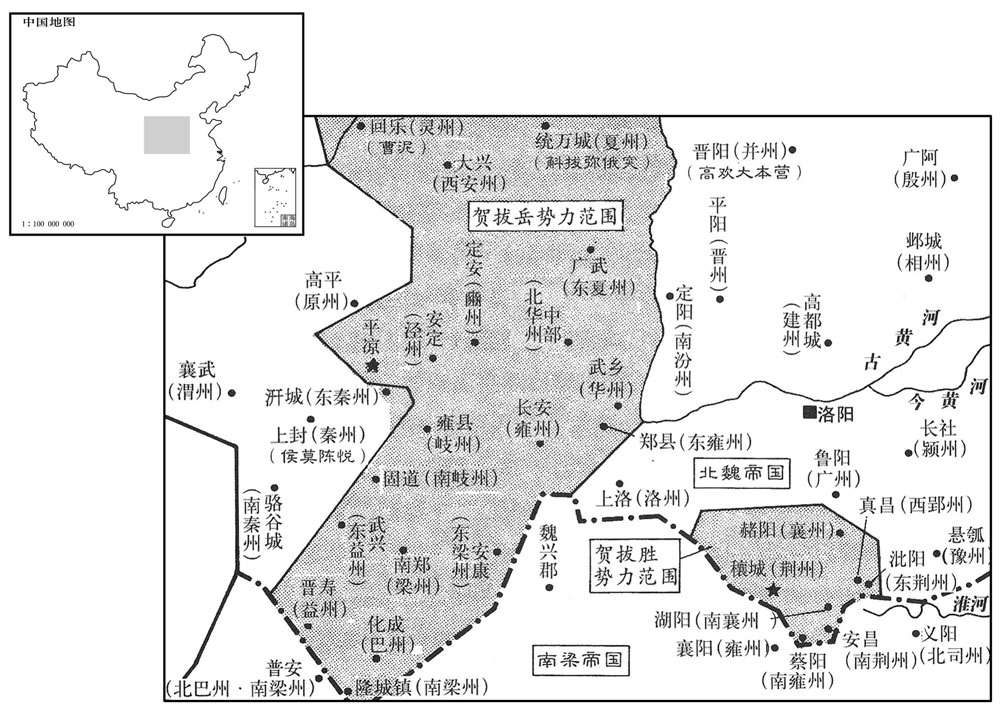
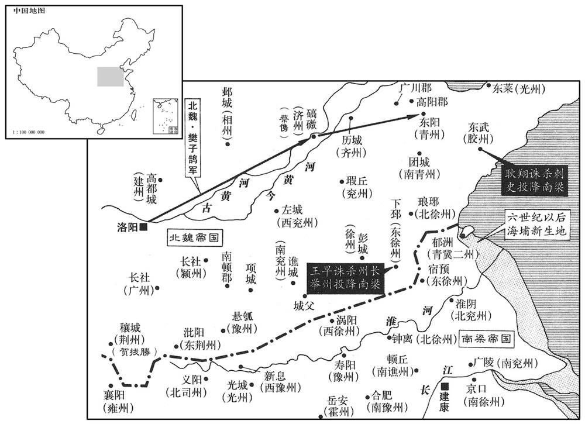
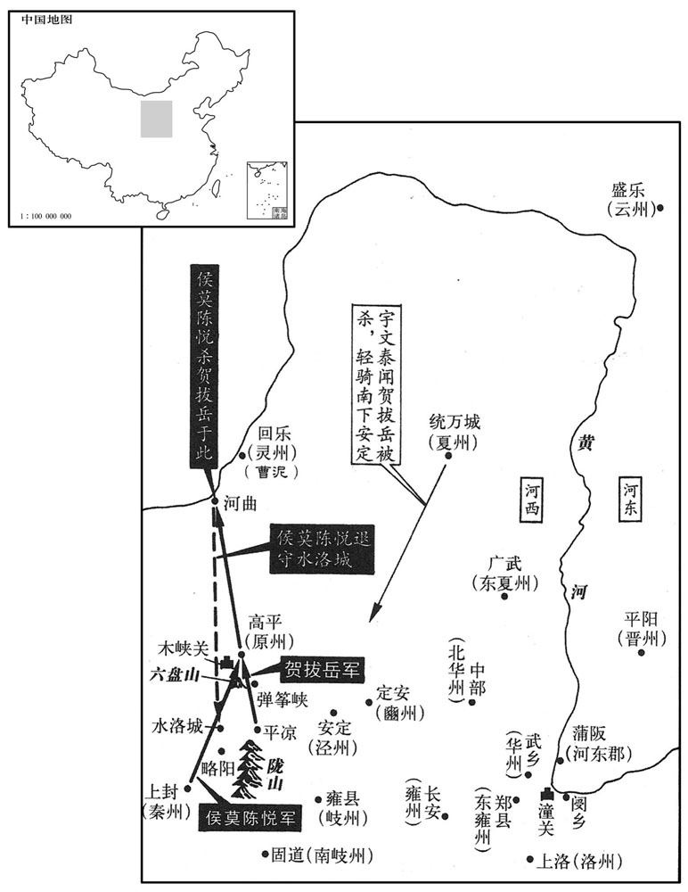
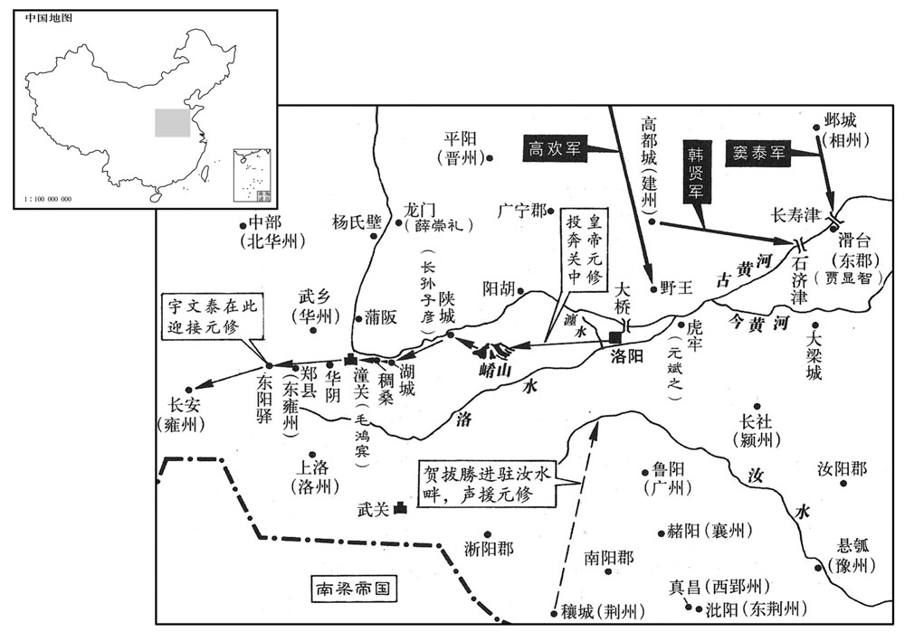
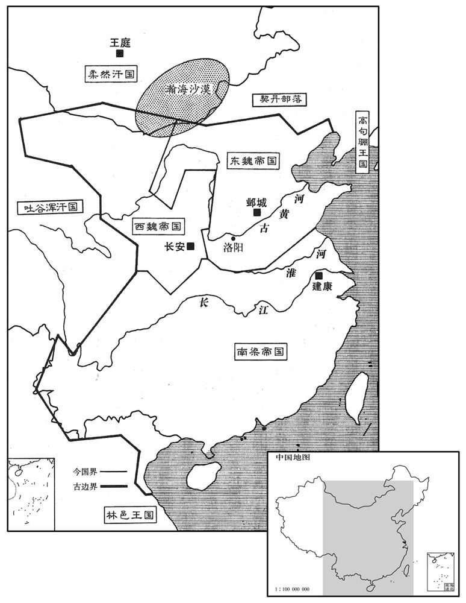

卷次与人物目录 / 卷156
资治通鉴 · 卷第一百五十六【梁纪十二】
公元533年至公元534年 · 原文、白话与胡三省注
本页按胡注本编排保存全卷内容。白话采用本站所据译本，未可靠对应的内容另列说明；事件标题用于定位，并非原书文字。
本卷共87段原文，85段有译文对应，2段缺译或待核对。
卷第一百五十六【梁纪十二】起昭阳赤奋若（癸丑），尽阏逢摄提格（甲寅），凡二年。
卷首原文与注释
高祖武皇帝十二
公元533年 · 梁高祖武皇帝中大通五年
中大通五年〔（癸丑、五三三）〕
上传原文的注释括号有异常，字符原样保留；无法可靠划分的段落默认全文显示。
本年事件索引（现代整理）
- 梁武帝正月祀南郊并大赦
- 窦泰突袭尔朱兆，尔朱兆败逃后自缢
- 北魏撤销各路行台
- 梁武帝祭祀明堂
- 孝武帝追尊父亲为武穆帝
- 北魏劳州、东荆州刺史举城投降
- 斛斯椿等密谋对付高欢，孝武帝加强宫禁并联络贺拔岳
- 高干因参与孝武帝密谋被赐死，高敖曹兄弟逃奔高欢
- 梁武帝在同泰寺讲《般若经》
- 阿至罗部众归降高欢，魏任命高欢为大行台
- 高干泄露孝武帝机密后被杀，高敖曹等逃奔晋阳
- 北魏太师鲁郡王元肃去世
- 南平元襄王萧伟去世
- 北魏任元谌为太尉、元宝炬为太保
- 尔朱兆焚毁太常乐库，北魏重新制作大成乐
- 耿翔攻陷胶州并杀刺史裴粲，随后向魏投降
- 东徐州百姓杀刺史崔庠后献下邳降魏
- 北魏命樊子鹄等平定青州，耿翔弃城逃梁
- 北魏任广陵王元欣为大司马、元谌为太师
- 宇文泰赴晋阳观察高欢，婉拒高欢挽留
- 宇文泰劝贺拔岳经营关陇，贺拔岳开始招抚当地诸部
- 高欢请求辞让王爵并分封勋臣
- 梁任何敬容为左仆射，谢举为右仆射
- 北魏命邸珍统军讨伐下邳
- 孝武帝前往嵩高狩猎并临幸温汤
- 贺拔胜攻取雍州多处戍城，汉南震动
- 高欢担忧贺拔岳与侯莫陈悦势大，派人离间二人
春，正月，辛卯，上祀南郊，大赦。
春季，正月，辛卯（初二），梁武帝在南郊祭天，大赦天下。
魏窦泰奄至尔朱兆庭，军人因宴休惰，忽见泰军，惊走，追破之于赤谼岭，〔杜佑曰：石州离石县有赤洪水，即离石水，赤洪其别名也。高欢破尔朱兆于赤洪岭，盖近此。又曰：赤洪水源出方山县，东流入离石。谼，户工翻。考异曰：魏帝纪：正月，庚寅朔；甲午，齐献武王自晋阳出讨兆，丁酉，大破之于赤洪岭。北齐帝纪：出兵在去年，破兆在今年。按岁首宴会，不应直至八日。今从齐书。〕众并降散。〔降，户江翻；下同。〕兆逃于穷山，命左右西河张亮及苍头陈山提斩己道以降，皆不忍；兆乃杀所乘白马，自缢于树。欢亲临，厚葬之。〔缢，于赐翻，又于计翻。临，力鸩翻，哭也。〕慕容绍宗携尔朱荣妻子及兆余众诣欢降，欢以义故，待之甚厚。〔义故，犹言义旧也。〕兆之在秀容，左右怭通款于欢，唯张亮无启疏，〔疏，所故翻。〕欢嘉之，以为丞相府参军。
北魏窦泰率领军队突然攻到尔朱兆大本营的厅堂，军中的人因为正在摆宴而疏于防守，忽然看见窦泰的军队，连忙惊慌地逃跑，后来在赤岭被窦泰追上击溃，不是投降就是逃散了。尔朱兆逃到荒山中，命令在身旁侍奉的西河人张亮以及仆隶陈山提砍下自己的头颅投降，张亮与陈山提都不忍心这么做。尔朱兆就杀掉自己所骑的白马，自己吊死在树上。高欢亲自来到尔朱兆自杀的地方，为他举行了隆重的葬礼。慕容绍宗带着尔朱容的妻子、孩子以及尔朱兆剩余的人马向高欢投降，高欢看在过去的交情上，给予他们很优厚的待遇。尔朱兆在秀容的时候，他的近臣们都悄悄地向高欢表示投靠之意，唯独张亮没有写信联系。高欢对他很赞许，任命他为丞相府的参军。
魏罢诸行台。〔天监十五年，魏以李平为行台，节度统攻硖石诸军，踵魏初之制而置之也。正光之末盗起，始复置诸道行台。〕
北魏罢免了各位行台。
辛亥，上祀明堂。
辛亥（二十二日），梁武帝在明堂举行祭祀典礼。
丁巳，魏主追尊其父为武穆帝，太妃冯氏为武穆后，母李氏为皇太妃。
丁巳（二十八日），北魏国主孝武帝分别追认他的父亲为武穆帝，太妃冯氏为武穆后，母亲李氏为皇太妃。
劳州刺史曹凤、东荆州刺史雷能胜等举城降魏。〔曹凤、雷能胜，皆蛮左也，因其地授以州刺史。降，户江翻。〕
劳州刺史曹凤、东荆州刺史雷能胜等人率领全城投降北魏。
魏侍中斛斯椿闻乔宁、张子期之死，〔宁、子期死，见上卷上年。〕内不自安，与南阳王宝炬、武卫将军元毗、王思政密劝魏主图丞相欢。〔椿本有图欢之心，因乔、张之死，惧祸将及，决计为之。〕毗，遵之玄孙也。〔道武建国之初，常山王遵有佐命之功。〕舍人元士弼又言欢受诏不敬，帝由是不悦。椿劝帝置合内都督部曲，又增武直人数，自直合已下，员别数百，〔武直，谓武士之入直殿合者。据五代志纪北齐之制，领军府将军，掌宿卫禁掖朱华合外，凡禁卫官皆主之。又左右卫府，将军各一人，掌左右厢，所主朱华合以外，各武卫将军二人贰之。其御仗属官有御仗正副都督、御仗五职、御仗等员。直荡属官有直荡正副都督、直入正副都督、勋武前锋正副都督、勋武前锋五职等员。直卫属官有直卫正副都督、翊卫正副都督等员。直突属官有直突都督、前锋散都督等员。直合属官有朱衣直合、直合将将、直寝、直斋、直后之属。又有云骑、武骑、骁骑、游击、前‧左‧右‧后等将军，左‧右虎贲等中郎将，步兵、越骑、射声、屯骑、长水等校尉，奉车、骑二都尉，羽林监、赜从仆射、积弩、积射、强弩、殿中等将军及员外将军、武卫常侍、殿中司马督、员外司马督等。盖其制昉于晋，代有损益。观北齐之制，则当时增置可概见矣。〕皆选四方骁勇者充之。〔骁，坚尧翻。〕帝数出游幸，椿自部勒，别为行陈，〔数，所角翻。行，户刚翻。陈，读曰阵。〕由是朝政、军谋，帝专与椿决之。帝以关中大行台贺拔岳拥重兵，密与相结，又出侍中贺拔胜为都督三荆等七州诸军事，〔【章：甲十一行本「事」下有「荆州刺史」四字；乙十一行本同；孔本同；退斋校同。】〕七州，三荆及襄、南襄、郢、南郢也。〕欲倚胜兄弟以敌欢，〔倚胜及岳也。〕欢益不悦。
北魏侍中斛斯椿听到乔宁、张子期的死讯，心里无法安宁，他与南阳王元宝炬、武卫将军元毗、王思政一道秘密劝说孝武帝除掉丞相高欢。元毗是元遵的玄孙。舍人元士弼又告诉孝武帝，说高欢对皇帝颁下的诏书不恭不敬，孝武帝因此不大愉快。斛斯椿劝说孝武帝设置了负责皇宫守卫的内都督部曲，又在皇帝居住的朱华阁里增添了值勤侍卫的人数，在这些侍卫下面，还有定额以外的侍卫几百人。充当卫士的都是从各地精选出的骁勇善战的人。孝文帝几次外出巡游，斛斯椿亲自部署，在卫士以外另外排列队伍。因此，有关朝政、军机方面的大事，孝武帝只与斛斯椿商议决定。由于关中大行台贺拔岳手中掌握重兵，孝武帝就与他秘密联系，又派遣侍中贺拔胜担任统管三荆等七州军事的都督，想倚仗贺拔胜兄弟的力量与高欢抗衡，高欢心里更加不高兴。
侍中、司空高干之在信都也，遭父丧，不暇终服。及孝武帝即位，表请解职行丧，诏听解侍中，〔句绝。〕司空如故。干虽求退，不谓遽见许，既去内侍，朝政多不关预，居常怏怏。〔怏，于两翻。〕帝既贰于欢，冀干为己用，尝于华林园宴罢，独留干，谓之曰：「司空奕世忠良，〔谓自高允以来。〕今日复建殊效，〔复，扶又翻。〕相与虽则君臣，义同兄弟，宜共立盟约，以敦情契。」殷勤逼之。干对曰：「臣以身许国，何攻有贰。」时事出仓猝，且不谓帝有异图，遂不固辞，亦不以启欢。及帝置部曲，干乃私谓所亲曰：「主上不亲勋贤而招集群小，数遣元士弼、王思政往来关西与贺拔岳计议，又出贺拔胜为荆州，外示疏忌，内实树党，令其兄弟相近，冀据有西方。祸难将作，必及于我。」乃密启欢。欢召干诣并州，面论时事，干因劝欢受魏禅，欢以袖掩其口曰：「勿妄言！今令司空复为侍中，门下之事一以相委。」欢屡启请，帝不许。干知变难将起，密启欢求为徐州；〔数，所角翻。近，其靳翻。难，乃旦翻。复，扶又翻；罗复、诏复下同。〕二月，辛酉，以干为骠骑大将军、开府仪同三司、徐州刺史，〔骠，匹妙翻。骑，奇计翻。〕以咸阳王坦为司空。〔为魏主杀高干讨高欢张本。〕
担任侍中、司空的高乾在信都的时候，正赶上父亲去世，没有来得及服丧期满。等到孝武帝登上皇位的时候，他上书请求解除自己的职务以便为父亲守孝。孝武帝颁下诏书免去他的侍中职务，但依旧让他担任司空。高乾虽然要求解除职务，但想不到孝武帝会立即批准，这一下既然丢掉了侍中的位置，就不能多插手朝中的事务，住在家里常常怏怏不乐。孝武帝对高欢有了二心，希望高乾能够为自己所用，他曾经在华林园的酒宴结束后单独留下高乾，对他说：“司空，你们一家世代都是忠良，现在你又建立了显赫的功业，我与你相处名义上是君臣关系，但在情义上就好象兄弟一样，我们应该一道订立盟约，使我们的情义更加深厚。”说着，孝武帝很殷勤地催促高乾立约。高乾回答说：“我把整个身体都给了国家，哪敢不一心一意呢？”这件事情发生得很突然，再说也没有想到孝武帝这样做是别有意图的，因此高乾就没有坚决推辞，也没有把这一件事向高欢禀报。直到孝武帝设置部曲的时候，高乾才私下对他亲近的人说：“皇上不与有功的贤良的大臣亲近，而是纠集了一群小人，还多次派遣元士弼、王思政来往于关西之间，与贺拔岳密谋，又派出贺拔胜掌管荆州，表面上显示出疏远贺拔胜的样子，实质上是在拉帮结派，使贺拔胜兄弟靠得近些，希望这样来占据西方。现在灾难将要降临了，而且必定要殃及到我的身上。”这才把孝武帝拉拢他的事秘密告诉了高欢。高欢把高乾叫到并州，同他当面讨论时事。高乾劝说高欢迫使孝武帝禅让帝位，高欢用袖子掩住高乾的嘴巴说道：“不要瞎说！现在就让司空你重新担任侍中，门下省的事全部委托给你了。”高欢屡次上书，请求让高乾复职，孝武帝都不允许。高乾知道灾难将要发生，就悄悄地请高欢给自己谋求徐州刺史的官职。二月，辛酉（初三），孝武帝任命高乾为骠骑大将军、开府仪同三司、徐州刺史，另外任命咸阳王元坦为司空。
癸未，上幸同泰寺，讲般若经，〔般，音揼。若，人者翻。〕七日而罢，会者数万人。
癸未（二十五日），梁武帝驾临同泰寺，讲解《般若经》，持续了七天才结束，到会的多达几万人。
魏正光以前，阿至罗常附于魏。〔阿至罗，高车种也。魏书：孝静帝兴和三年，阿至罗国主副伏罗越君子去宾来降，封之为高车王。〕及中原多事，阿至罗亦叛，丞相欢招抚之，阿至罗复降，凡十万户。三月，辛卯，诏复以欢为大行台，〔魏方罢诸行台，今复命欢以此职，以招抚阿至罗。〕使随宜裁处。〔处，昌吕翻。〕欢与之粟帛，议者以为徒费无益，欢不从，及经略河西，大收其用。〔谓救曹泥及取万俟受洛干时也。〕
在北魏正光年间以前，阿至罗国经常依附于北魏。等到中原一带战事纷繁的时候，阿至罗国也反叛了。北魏的丞相高欢进行招抚后，阿至罗国又投降了，一共带了十万户人家。三月，辛卯（初三），北魏孝武帝颁下诏书，重新任命高欢为大行台，授权他可以随机裁决处理有关事务。高欢要给予阿至罗国一批粮食和绢帛，参与讨论此事的人都认为这是白费财物，不可能有什么收益，高欢没有听他们的话。等到高欢征伐河西地区的时候，得到了阿至罗人的大力支持。
高干将之徐州，魏主闻其漏泄机事，乃诏丞相欢曰：「干邕与朕私有盟约，今乃反复两端。」欢闻其与帝盟，亦恶之，〔恶，乌故翻。〕即取干前后数启论时事者遣使封上，〔使，疏吏翻；下同。上，时掌翻。〕帝召干，对欢使责之，干曰：「陛下自立异图，乃谓臣为反复，人主加罪，其可辞乎！」遂赐死。帝又密敕东徐州刺史潘绍业杀其弟敖曹，〔按李延寿齐纪，魏主遣东徐州刺史潘绍业密敕长乐太守庞苍鹰杀敖曹，则是高敖曹此时在信都也。〕敖曹先闻干死，伏壮士于路，执绍业，得敕书于袍领，遂将十余骑奔晋阳。〔将，即亮翻。骑，奇计翻。〕欢抱其首哭曰：「天子枉害司空。」敖曹兄仲密为光州刺史，帝敕青州断其归路，〔断，音短。仲密由东莱归勃海，道出青州。〕仲密亦行奔晋阳。〔间，古苋翻。〕仲密名慎，以字行。
高乾将要去徐州上任，北魏孝武帝听说了他泄漏机密的事情，就写了诏书对丞相高欢说：“高乾跟我私下有过盟约，如今他在你和我两边翻来覆去。”高欢一听高乾与孝武帝曾经订过盟约，也对他产生了恶感，于是立即找来高乾以前给他的几件评论时事的文书，加以密封，派遣使者送给孝武帝。孝武帝召见高乾，当着高欢使者的面斥责高乾，高乾回答说：“陛下您自己有别的企图，才说我反复无常，做帝王的要将罪行硬加到一个人头上，难道还可以推卸得了吗！”于是，孝武帝赐高乾死。孝武帝又写密信给东徐州刺史潘绍业，命令他杀掉高乾的弟弟高敖曹，高敖曹已经提前得到了高乾的死讯，因此在路旁埋伏了精壮的士卒，捉住了潘绍业，从他衣袍的领子里搜到了孝武帝的诏书。于是，高敖曹就带着十几个人骑马直奔晋阳。高敖曹到达晋阳之后，高欢抱崐住他的头痛哭道：“皇上屈杀了高司空。”高敖曹的哥哥高仲密是光州刺史，孝武帝命令青州的兵马切断他回去的道路，高仲密也从小路跑到了晋阳。高仲密名叫高慎，通常用表字。

魏太师鲁郡王肃卒。〔卒，子恤翻。〕
北魏的太师鲁郡王元肃去世。
丙辰，南平元襄王伟卒。
丙辰（二十八日），梁朝的南平元襄王萧伟去世。
丁巳，魏以赵郡王谌为太尉，〔谌，氏壬翻。〕南阳王宝炬为太保。
丁巳（二十九日），北魏任命赵郡王元谌为太尉，南阳王元宝炬为太保。
魏尔朱兆之入洛也，〔兆入洛见一百五十四卷二年。〕焚太常乐库，锺磬俱尽。节闵帝诏录尚书事长孙稚、太常卿祖莹等更造之，至是始成，命曰大成乐。
北魏的尔朱兆在进入洛阳之后，焚烧了太常府的乐器库房，钟磬等等都给烧得一干二净。节闵帝元恭颁下诏书，命令录尚书事长孙稚、太常卿祖莹等人重新制造，到这个时候才完成，它们被命名为《大成乐》。
魏青州民耿翔聚众寇掠三齐，〔三齐，因秦、汉旧名言之。〕胶州刺史裴粲，专事高谈，不为防御；夏，四月，翔掩袭州城。〔魏永安二年，置胶州，治东武城，领东武、高密、平昌郡。东武城，今密州诸城县是也。〕左右白贼至，粲曰：「岂有此理！」左右又言已入州门，粲乃徐曰：「耿王来，可引之听事，自余部众，且付城民。」翔斩之，送首来降。〔降，户江翻；下同。〕
北魏青州的百姓耿翔聚集了一帮盗匪在三齐大肆掠夺，胶州刺史裴粲只会高谈阔论，不设防御。夏季，四月，耿翔带着人马突然袭击了胶州州城。裴粲身旁的部下向他禀告说贼兵冲过来了，他却回答：“岂有此理！”部下们又过来报告说贼兵已经进入城门了，裴粲才慢慢地说道：“耿王来了，你们可以带到厅堂来，他下面的那些人马，都交给城中的百姓。”耿翔杀了裴粲，带着他的脑袋来向梁朝投降。
五月，魏东徐州民王早等杀刺史崔庠，以下邳来降。〔考异曰：梁帝纪：「六月，己卯，魏建义城主兰宝以下邳城降。」今从魏书。〕
五月，北魏东徐州的百姓王早等人杀了刺史崔庠，献出下邳向梁朝投降。
六月，壬申，魏以骠骑大将军樊子鹄为青、胶大使，督济州刺史蔡儁等讨耿翔。〔济，子礼翻。〕秋，七月，魏师至青州，翔弃城来奔，诏以为兑州刺史。
六月，壬申（十五日），北魏任命骠骑大将军樊子鹄为赴青州、胶州的特别使节，督促济州刺史蔡俊等人讨伐耿翔。秋季，七月，北魏的军队攻到了青州，耿翔放弃了青州城赶来投奔梁朝，梁武帝颁下诏书，任命他为兖州刺史。

壬辰，魏以广陵王欣为大司马，赵郡王谌为太师，庚戌，以前司徒贺拔允为太尉。〔考异曰：魏帝纪作「贺拔渥」。按允字阿鞠难，盖「难」字误为「渥」耳。〕
壬辰（初六），北魏任命广陵王元欣为大司马，赵郡王元谌为太师。庚戌（二十四日），又任命前司徒贺拔允为太尉。
初，贺拔岳遣行台郎冯景诣晋阳，丞相欢闻岳使至，甚喜，〔使，疏吏翻。〕曰：「贺拔公讵忆吾邪！」与景歃血，约与岳为兄弟。〔歃，色甲翻。〕景还，言于岳曰：「欢奸诈有余，不可信也。」府司马宇文泰自请使晋阳〔使，疏吏翻。〕以观欢之为人，欢奇其状貌，曰：「此儿视瞻非常。」将留之，泰固求复命；欢既遣而悔之，发驿急追，至关不及而返。〔项羽不杀沛公，曹操之遣刘备，桓玄之容刘裕，类如此耳。有天命者，固非人所能图也。〕
起初，贺拔岳派遣行台郎冯景到晋阳，丞相高欢听说贺拔岳的使者来了，非常高兴，说道：“贺拔公岂不是想念我了？”然后与冯景歃血为盟，约定与贺拔岳结为兄弟。冯景回去后，对贺拔岳说：“高欢奸诈有余，真诚不足，不可信任。”府司马宇文泰自告奋勇，请求出使晋阳，以便观察高欢的为人到底如何。高欢见了宇文泰，对他的相貌感到惊奇，说道：“这个年轻人的仪表看起来不同寻常。”因此要留下宇文泰，宇文泰坚决要求回去复命；高欢让宇文泰走了之后又觉得后悔，急忙派人骑驿马追赶，一直追到潼关还没有追上，只好返回。
泰至长安，谓岳曰：「高欢所以未篡者，正惮公兄弟耳；侯莫陈悦之徒，非所忌也。公但潜为之备，图欢不难。今费也头控弦之骑不下一万，夏州刺史斛拔弥俄突胜兵三千余人，〔胜，音升。〕灵州刺史曹泥、河西流民纥豆陵伊利等各拥部众，未知所属。公若引军近陇，〔近，其靳翻。陇，坂也。〕扼其要害，震之以威，怀之以惠，可收其士马以资吾军。西辑氐、羌，北抚沙塞，〔灵、夏塞外，北临沙漠。〕还军长安，匡辅魏室，此桓、文之举也。」〔「举」，一作「功」。〕岳大悦，复遣泰诣洛阳请事，密陈其状。〔复，扶又翻。〕魏主喜，加泰武卫将军，使还报。八月，帝以岳为都督雍‧华等二十州诸军事、雍州刺史，〔魏泰和十一年，分雍州置华州，领华山、澄城、白水郡。二十州，雍、华、东华、岐、南岐、豳、原、河、渭、泾、夏、东夏、秦、南秦、梁、南梁、东梁、巴、益、东益也。雍，于用翻。华，户化翻。〕又割心前血，遣使者赍以赐之。〔使，疏吏翻。〕岳遂引兵西屯平凉，以牧马为名。〔所谓近陇也。〕斛拔弥俄突、纥豆陵伊利及费也头万俟受洛干、铁勒斛律沙门等皆附于岳，〔纥，下没翻。万，莫北翻。俟，渠之翻。〕唯曹泥附于欢。奏、南秦、河、渭四州刺史同会平凉，受岳节度。岳以夏州被边要重，〔夏，户雅翻。被，皮义翻。〕欲求良刺史以镇之，众举宇文泰，岳曰：「宇文左丞，吾左右手，何可废也！」沈吟累日，卒表用之。〔沈，持林翻。卒，子恤翻。〕
宇文泰回到长安后，对贺拔岳说：“高欢之所以还没有篡夺帝位，正是因为忌惮你们兄弟，而侯莫陈悦等人，并不是他所猜忌的对象。您只要悄悄地进行准备，算计高欢是不难的。现在费也头部族善于射箭的骑兵不下一万人，夏州刺史斛拔弥俄突的精兵有三千多人，灵州刺史曹泥、河西流民纥豆陵伊利等人各自都拥有一帮人马，还不知道自己要归属哪一方。您要是带着军队逼近陇地，扼守该地的要害之处，用威势来震慑他们，同时再用恩惠对他们进行安抚，就可以收伏他们的兵马来壮大我军的力量。此外，西边亲睦氐、羌部落，北边抚慰沙漠塞外之民，然后挥师返回长安，辅助魏国皇室，这是足以跟齐桓公、晋文公的功业相比的举动呀。”贺拔岳听了非常高兴，又派遣宇文泰到洛阳向孝武帝请示有关事宜，秘密陈述有关情况。孝文帝也很欢喜，加封宇文泰为武卫将军，叫他回去向贺拔岳汇报。八月，孝武帝任命贺拔岳为都督雍、华等二十州诸军事及雍州刺史，又割破自己心口前的皮肉，取出一些鲜血，派遣使者赐送给贺拔岳。贺拔岳于是带领兵马向西挺进，以牧马的名义驻扎在平凉。斛拔弥俄突、纥豆陵伊利以及费也头的万俟受洛干、铁勒斛律沙门等人都依附于贺拔岳，只有曹泥还依附于高欢。秦、南秦、河、渭四州的刺史一同汇集在平凉，接受贺拔岳的指挥调度。贺拔岳因为夏州地处边境，地形重要，想要寻找一位出色的刺史来镇守，大家都推举宇文泰，贺拔岳说道：“宇文左丞是我的左右手，怎么可以离开我！”他反复考虑了好几天，最终还是上书孝武帝，请求任用宇文泰为夏州刺史。
九月，癸酉，魏丞相欢表让王爵，不许；请分封邑十万户颁授勋义，〔勋义，谓自信都从起义，讨尔朱有功勋者也。〕从之。
九月，癸酉（疑误），北魏的丞相高欢上书请求让掉自己的王爵，孝武帝没有允许；高欢又请求将自己封地里的十万户人家作为奖赏，分赏给从信都跟他起义讨伐尔朱氏有功勋的人，孝武帝答应了。
冬，十月，庚申，以尚书右仆射何敬容为左仆射，吏部尚书谢举为右仆射。
冬季，十月，庚申（初五），梁武帝任命尚书右仆射何敬容为左仆射，吏部尚书谢举为右仆射。
十一月，癸巳，魏以殷州刺史中山邸珍为徐州大都督、东道行台、仆射，以讨下邳。〔邸，姓也。风俗通：汉有上郡太守邸杜。讨王早也。〕
十一月，癸巳（初九），北魏任命殷州刺史中山人邸珍为徐州大都督、东道行台、仆射，派他来讨伐下邳。
十二月，丁巳，魏主狩于嵩高；己巳，幸温汤；〔历嵩高而南，唯汝州梁县有温汤耳。〕丁丑，还宫。
十二月，丁巳（初三），北魏孝武帝在嵩高狩猎；己巳（十五日），又到温泉洗浴；丁丑（二十三日），返回宫中。
魏荆州刺史贺拔胜寇雍州，〔此梁之雍州，治襄阳。〕拔下迮戍，〔迮，侧百翻，亦作「莋」。〕扇动诸蛮；雍州刺史庐陵王续遣军击之，屡为所败，〔败，补卖翻。〕汉南震骇。胜又遣军攻冯翊、安定、沔阳、酇城，皆拔之。〔五代志：竟陵郡蓝水县侨立冯翊郡。沔阳郡后为复州。襄阳郡阴城县，旧置酇城郡。萧子显齐志：宁蛮府所领郡有安定郡，领新安等县。五代志，新安县并入襄阳郡南漳县，当是置安定侨郡南漳界也。蓝水，唐并入郢州长寿县；阴城，并入谷城县。沈约志：冯翊郡治襄阳郡鄀县。沔，弥兖翻。酇，音赞。〕续遣电威将军柳仲礼屯谷城以拒之，〔五代志：谷城县，属襄阳郡，旧曰义城，置义城郡。〕胜攻之，不克，乃还；于是沔北荡为丘墟矣。〔荡，徒朗翻。〕仲礼，庆远之孙也。〔柳庆远见一百四十三卷齐东昏侯永元二年。〕
北魏荆州刺史贺拔胜进犯雍州，攻克了下迮戍所，煽动蛮民们归附北魏，梁朝雍州刺史庐陵王萧续派遣军队攻击贺拔胜，屡次被对方打败，汉水以南地区都震惊恐惧起来。贺拔胜又派遣军队进攻冯翊、安定、沔阳、城四郡，都攻了下来。庐陵王萧续又派遣电威将军柳仲礼驻军谷城，以抵御贺拔胜，贺拔胜攻打谷城没有成功，就带着兵马返回；于是沔北地区都被扫荡成了一片土丘废墟。柳仲礼是柳庆远的孙子。
魏丞相欢患贺拔岳、侯莫陈悦之强，右丞翟嵩曰：「嵩能间之，〔间，古苋翻。〕使其自相屠灭。」欢遣之。欢又使长史侯景招纥豆陵伊利，伊利不从。
北魏的丞相高欢对贺拔岳和侯莫陈悦的强大感到害怕，右丞翟嵩对高崐欢说：“我能够离间他们，使他们相互屠杀灭亡。”高欢就派他去办理此事。高欢又派遣长史侯景去招抚纥豆陵伊利，纥豆陵伊利没有听从。
公元534年 · 梁高祖武皇帝中大通六年
六年〔（甲寅、五三四）〕
上传原文的注释括号有异常，字符原样保留；无法可靠划分的段落默认全文显示。
本年事件索引（现代整理）
- 高欢在河西击败纥豆陵伊利并迁徙其部众
- 东梁州百姓与夷人作乱，泉企受命讨平
- 北魏大赦
- 梁武帝耕籍田并大赦
- 北魏永宁寺佛塔失火，观者悲哭
- 侯莫陈悦诱杀贺拔岳，贺拔岳部众推举宇文泰
- 赵贵等人力主奉宇文泰为主，派杜朔周前往迎接
- 宇文泰接受贺拔岳部众拥戴，决意抢先入关中
- 宇文泰识破弥姐元进与侯莫陈悦暗通，将其斩杀
- 宇文泰率轻骑赶赴平凉，杜朔周安抚百姓
- 侯景试图招抚贺拔岳余部，被宇文泰当面拒绝
- 高欢派侯景等人劝宇文泰归附，宇文泰不从
- 孝武帝召宇文泰入朝，宇文泰请求暂留整军
- 李虎投奔贺拔胜未果，转而归附宇文泰
- 宇文泰致书指责侯莫陈悦背信弃义
- 宇文泰建议魏帝安置侯莫陈悦，以免留下后患
- 侯莫陈崇夜袭原州，擒获叛将史归等人
- 北魏发生日食
- 李弼劝侯莫陈悦解兵谢罪，侯莫陈悦不听
- 宇文泰进攻陇地，侯莫陈悦兵败自缢
- 宇文泰进入上邽，厚赏将士而不取敌方财物
- 刘亮潜入豳州刺史孙定儿营中，将其斩杀
- 杨绍先复据武兴称王，宇文泰派将镇守各州
- 于谨劝宇文泰迎魏帝入关中以号令诸侯
- 高欢厚礼结交宇文泰，宇文泰将书信转呈魏帝
- 孝武帝命宇文泰派兵镇守东雍州，梁御率军入长安
- 孝武帝任宇文泰为关西大都督，并授权封拜官爵
- 封隆之等与高欢之间互生猜忌，多名官员逃往晋阳
- 孝武帝命戒严并伪称南伐，暗中备战高欢
- 孝武帝派兵驻守黄河要地，准备阻拦高欢南下
- 王思政劝孝武帝投奔宇文泰，裴侠则建议先观局势
- 孝武帝阻止高欢迁都邺城，双方关系愈加紧张
- 任祥离弃官职渡河投奔高欢，卢柔为贺拔胜分析出路
- 孝武帝任宇文泰兼尚书仆射并出任关西大行台
- 高欢调弟弟高琛镇守晋阳，亲自率军南下
- 孝武帝亲率十余万大军驻守河桥
- 魏帝拒绝采纳斛斯椿夜渡黄河计划，随后被迫逃往长安
- 高欢斥责群臣未尽臣节，诛杀多名官员
- 宇文泰迎接孝武帝入长安，出任大将军并统管军政
- 梁武帝因魏帝逃入关中，感叹天象应验
- 北魏任武兴王杨绍先为秦、南秦二州刺史
- 高欢追击孝武帝并攻克潼关，随后进驻华阴
- 高欢撤回河东，分派将领驻守潼关、封陵和华州
- 高欢连续上表要求孝武帝东还，孝武帝始终不答
- 冯景昭率东荆州兵奔赴关中，途中遭杨祖欢击败
- 高欢到洛阳后拥立清河王世子元善见为孝静帝
- 宇文泰攻取潼关，击退东魏军队后返回长安
- 梁任元庆和为镇北将军，率军伐东魏
- 侯渊反复归附，夺取青州并斩杀王贵平
- 东魏任元谌为大司马、元坦为太尉
- 高欢决定迁都邺城，四十万户仓皇离开洛阳
- 樊子鹄据瑕丘反抗东魏
- 孝静帝抵达邺城，迁都后的东魏开始安置百姓
- 宇文泰派李虎、李弼等人攻打灵州曹泥
- 元庆和攻占濑乡
- 孝武帝与堂妹明月公主关系失礼，后被宇文泰毒杀
- 独孤信奉命招抚荆州，劝当地将领归附西魏
- 辛纂不听李广劝阻攻打淅阳，导致诸将溃败
- 独孤信、杨忠攻入穰城斩杀辛纂，随后投奔西魏
春，正月，壬辰，魏丞相欢击伊利于河西，擒之，迁其部落于河东。〔河西，五原河之西也。河东，亦五原河之东。〕魏主让之曰：「伊利不侵不叛，为国纯臣，〔左传：戎子驹支曰：「为先君不侵不叛之臣。」〕王忽伐之，讵有一介行人先请之乎！」
春季，正月壬辰（初九），北魏的丞相高欢在五原河西部地区袭击了纥豆陵伊利，抓住了他，并且将他的部落迁移到五原河以东地区。北魏孝武帝责难高欢说道：“纥豆陵伊利既没有入侵，也没有叛变，是我们魏国忠贞的臣子，您突然讨伐他，难道有一个使者事先来请示过吗？”
魏东梁州民夷作乱，〔魏收志：东梁州领金城、直城康、魏明郡。五代志：西城郡，旧置东梁州。金城，即今金州城也，东梁州治焉。〕二月，诏以行东雍事丰阳泉企讨平之。〔魏世祖置东雍州于平阳，太和中罢。孝昌中，于平阳置唐州，以唐尧都平阳，因以名州；建义初，改为晋州。未尝复置东雍州也。五代志曰：雍州郑县，后魏置东雍州。参考魏收志，郑县时已属华州界，未知此东雍州置于何地也。魏收志：丰阳县属上庸郡，太安二年置。姓谱曰：国语：潞、泉、余、满，皆赤狄隗姓。又，吴全琮孙恽降魏，封南阳，食邑白水，因为泉氏。企，去智翻。考异曰：北史作「泉仚」。今从周书。〕企世为商、洛豪族，〔商、洛，指汉古县商县、止洛县而言也。隋志，上洛郡有商洛县。〕魏世祖以其曾祖景言为本县令，封丹水侯，使其子孙袭之。
北魏东梁州的百姓夷人叛乱，二月，孝武帝颁下诏书，命令兼管东雍州事务的丰阳人泉企讨伐平定这场叛乱。泉企一家世世代代是商、洛一带的豪门大族。太武帝曾经任命泉企的曾祖父泉景言为本县的县令，还封他为丹水侯，并让他的子孙世袭这个爵位。
壬戌，魏大赦。
壬戌（初九），北魏大赦天下。
癸亥，上耕藉田；大赦。
癸亥（初十），梁武帝在籍田耕作，同时大赦天下。
魏永宁浮图灾，观者皆哭，声振城阙。〔魏起永宁浮图，见一百四十八卷天监十五年。史言末俗深信浮图以至于此。振，之印翻。〕
北魏永宁寺佛塔失火，看到灾情的人无不痛哭，哭声振动了城门两边的楼观。
魏贺拔岳将讨曹泥，使都督武川赵贵至夏州与宇文泰谋之，泰曰：「曹泥孤城阻远，未足为忧。侯莫陈悦贪而无信，宜先图之。」岳不听，〔曹泥附高欢，岳不从宇文泰之言，急于致讨，盖欲报高欢禽伊利之役耳，亦忿兵也。〕召悦会于高平，与共讨泥。悦既得翟嵩之言，乃谋取岳。岳数与悦宴语，〔数，所角翻。〕长史武川雷绍谏，不听。岳使悦前行，至河曲，〔河曲在灵州西。河千里一曲。河水自浇河至汉眴卷古县，率东北流，至富平始曲而北流，所谓河曲也。富平，唐灵州地。〕悦诱岳入营坐，论军事，〔诱，音酉。〕悦阳称腹痛而起，其伲元洪景拔刀斩岳。岳左右皆散走，悦遣人谕之云：「我别受旨，止取一人，诸君勿布。」〔布，普布翻。〕众以为然，皆不敢动。而悦心犹豫，不即抚纳，乃还入陇，屯水洛城。〔我朝以渭州笼竿城置德顺军；水洛城在军西一百里。〕岳众散还平凉，赵贵诣悦请岳尸葬之，悦许之。岳既死，悦军中皆相贺，行台郎中薛竏私谓所亲曰：「悦才略素寡，辄害良将，吾属今为人虏矣，何贺之有！」竏，真度之从孙也。〔竏，直陵翻。将，即亮翻。薛真度见一百三十九卷齐明帝建武元年。〕
北魏的贺拔岳将要讨伐曹泥，派了都督武川人赵贵到夏州先与宇文泰商量，宇文泰说：“曹泥掌握的是一座孤城，隔的距离又远，不足以成为我们忧虑的对象。侯莫陈悦贪心而又不讲信义，应该先收拾他。”贺拔岳没有听从宇文泰的建议，而是召请侯莫陈悦在高平与自己会合，共同讨伐曹泥。侯莫陈悦听了翟嵩的话以后，就图谋除掉贺拔岳。贺拔岳多次与侯莫陈悦随便聊天说话，担任长史的武川人雷绍劝告他，他听不进去。贺拔岳叫侯莫陈悦走在前面，到了河曲，侯莫陈悦引诱贺拔岳到他的军营去坐，一同谈论军事，谈着谈着，侯莫陈悦假装说自己肚子疼，站起身来，他的女婿元洪景拔出腰刀杀了贺拔岳，贺拔岳身边的人都纷纷逃散，侯莫陈悦派人告诉他们说：“我奉了朝廷密旨，只取贺拔岳一个人的性命，各位都不要害怕。”大家都认为侯莫陈悦的话是真的，不敢轻举妄动。但是侯莫陈悦自己的心里还犹豫不决，不敢安抚招纳贺拔岳的部属，于是就回到陇地，驻扎在水洛城。贺拔岳离散的部属回到平凉，赵贵来到侯莫陈悦处请求由他安葬贺拔岳的遗体，侯莫陈悦答应了他。贺拔岳死了之后，侯莫陈悦军队里的官兵都相互庆贺，行台郎中薛悄悄地对他亲近的人说：“侯莫陈悦向来缺乏才识谋略，总是杀害良将，我们这些人现在已注定被人俘虏了，有什么可以庆贺的！”薛是薛真度的侄孙子。
岳众未有所属，诸将以都督武川寇洛年最长，〔长，知两翻。〕推使总诸军；洛素无威略，不能齐众，乃自请避位。赵贵曰：「字文夏州英略冠世，〔冠，古玩翻。〕远近归心，赏罚严明，士卒用命，若迎而奉之，大事济矣。」诸将或欲南召贺拔胜，或欲东告魏朝，〔朝，直遥翻。〕犹豫不决。都督盛乐杜朔周曰：〔盛乐，前汉之成乐县也，属定襄郡，后汉属云中郡，魏、晋省；后魏先世园陵在焉。魏收志：永熙中，置盛乐郡，云中治所。魏土地记：云中城东八十里有盛乐城。宋白曰：后魏所都盛乐，唐为振武军。〕「远水不救近火，今日之事，非宇文夏州无能济者，赵将军议是也。朔周请轻骑告哀，且迎之。」〔骑，奇计翻。〕众乃使朔周驰至夏州召泰。
贺拔岳的部下们都还没有归属，各位将领考虑到担任都督的武川人寇洛年崐龄最大，就推举他总管所有的军队，寇洛一向没有威望谋略，不能把大家管理好，就自己请求让位，赵贵说道：“夏州刺史宇文泰的才略天下第一，远近的人心都向着他，他赏罚严明，士兵们都愿意听从他的命令，如果将他迎接来，拥戴他作为我们的统帅，大事就可以成功了。”各位将领中有的想去南方叫贺拔胜来收拾残局，有的想去东方把情况禀告北魏的朝廷，一时间犹豫不决。担任都督的盛乐人杜朔周说道：“远水救不了近火，今天这样的事情，除了宇文泰外，没有任何人能够办成功，赵将军的一番议论是正确的。请允许我朔周骑上快马向宇文泰报告噩耗，并且迎接他到这儿来。”大家就让杜朔周作为使者赶往夏州请宇文泰来。
泰与将佐宾客共议去留，前太中大夫颍川韩褒曰：「此天授也，又何疑乎！侯莫陈悦，井中蛙耳，使君往，必擒之。」众以为：「悦在水洛，去平凉不远，若已有贺拔公之众，则图之实难，愿且留以观变。」泰曰：「悦既害元帅，〔帅，所类翻。〕自应乘势直据平凉，而退据水洛，吾知其无能为也。夫难得易失者，时也。〔用汉蒯彻语意。易，以豉翻。〕若不早赴，众心将离。」
宇文泰与他的将领、幕僚、宾客一同商议是去是留，前太中大夫、颍川人韩褒说道：“这是上天授命给您，还有什么可以疑虑的呀！侯莫陈悦不过是只井中之蛙，如果您去的话，一定能够捉住他。”众人都认为：“侯莫陈悦所处的水洛距离平凉不远，如果他已经拥有贺拔岳留下的兵马，再算计他就非常困难了，希望暂且留下来观察时局的变化。”宇文泰说：“侯莫陈悦既然杀害了贺拔岳元帅，自然应该乘这个势头直接占据平凉，而他却退了一步占据了水洛，由此我知道他没有能耐再干什么了。难以得到而又容易失去的是时机，假如我不早点去的话，人心将会离散。”
夏州首望都督弥姐元进阴谋应悦，〔姐，音紫，又子也翻。弥姐，元进之族，为州之首望，官又为都督。弥姐，羌复姓。〕泰知之，与帐下都督高平蔡佑谋执之，佑曰：「元进会当反噬，不如杀之。」泰曰：「汝有大决。」〔言能决大计也。〕乃召元进等入计事，泰曰：「陇贼逆乱，当与诸人戮力讨之，诸人似有不同者，何也﹖」佑即被甲持刀直入，〔被，皮义翻。〕瞋目谓诸将曰：〔睹，七人翻。〕「朝谋夕异，何以为人！今日必断奸人首！」举坐皆叩头曰：〔断，丁管翻。坐，徂卧翻。〕「愿有所择。」佑乃叱元进，斩之，并诛其党，因与诸将同盟讨悦。泰谓佑曰：「吾今以尔为子，尔其以我为父乎﹖」
都督弥姐元进的家族是夏州首屈一指的名门望族，他阴谋策应侯莫陈悦，宇文泰知道了这一情况后，与担任帐下都督的高平人蔡谋划如何捉住他，蔡说道：“弥姐元进会反咬一口的，不如杀掉他。”宇文泰夸奖他说：“你有作重要决策的能力。”于是就召请弥姐元进等人到府中商量事情，宇文泰说：“陇州的贼寇进行叛乱，我理所应当和各位一道齐心协力讨伐他们，可是你们之中好象有想法不同的人，这是为什么呀？”话刚落音，身披铠甲手持钢刀的蔡一直走进来，瞪大眼睛对各位将领说：“早上想好的主意晚上就改变，还做人干什么？今天一定要砍掉奸贼的脑袋！”在座的人都跪下叩头说：“希望将军区别忠奸。”蔡就大声喝斥弥姐元进，接着杀掉了他，还诛灭了他的党羽，这样就与各位将领结成同盟一道讨伐侯莫陈悦。宇文泰对蔡说：“我从今以后把你当成我的儿子，你愿意认我作你的父亲吗？”
泰与帐下轻骑驰赴平凉，令杜朔周帅众先据弹筝峡。〔杜佑曰：弹筝峡，在今原州之百泉县。百泉即汉朝那县地。九域志：渭州都卢峡，即弹筝峡也。水经云：都卢山峡之内，常有弹筝之声。又云：弦歌之山，峡口水流，风吹摧响，有似音韵也。骑，奇计翻。帅，读曰率。〕时民间惶惧，逃散者多，军士争欲掠之，朔周曰：「宇文公方伐罪讨民，柰何助贼为虐乎！」抚而遣之，远近悦附；泰闻而嘉之。朔周本姓赫连，曾祖库多汗避难改焉，〔汗，音寒。难，乃旦翻。〕泰命复其旧姓，名之曰达。
宇文泰与手下的轻骑兵一起快速地赶赴平凉，命令杜朔周带领兵马先占领弹筝峡。此时老百姓都很惊惶恐惧，逃散的人很多，士兵们争先恐后地要掠夺他们的财物，杜朔周对士兵们说：“宇文泰大人正在征伐罪人，使百姓安享太平，你们怎么还帮助奸贼做坏事呀？”他对百姓进行安抚并把他们发送回去，远近的人因此都高兴地归附过来；宇文泰听到这一消息后嘉奖了他。杜朔周本姓赫连，他的曾祖父库多汗为了避难而改姓杜，宇文泰叫杜朔周恢复他的旧姓，给他起名为赫连达。
丞相欢使侯景招抚岳众，泰至安定遇之，谓曰：「贺拔公虽死，宇文泰尚存，卿何为者！」景失色曰：「我犹箭耳，唯人所射。」〔射，食亦翻。英雄之姿表与其举措必有异乎人者，以侯景之凶狡，宇文泰一语折之，辞气俱下，良有以哉。李密见唐太宗不觉惊服，事亦类此。〕遂还。〔侯景不敢前至平凉。〕
北魏的丞相高欢派侯景去招纳安抚贺拔岳的兵马，宇文泰走到安定的时候遇见了他，对他说：“贺拔岳虽然已经去世，但我宇文泰还活着，你想要干什么！”侯景大惊失色，回答说：“我不过是一枝箭，人家把我射到哪儿我就到崐哪儿。”于是便返回了。
泰至平凉，哭岳甚恸，将士皆悲喜。
宇文泰到达平凉之后，非常悲痛地哭吊贺拔岳，将士们都又悲又喜。
欢复使侯景与散骑常侍代郡张华原、义宁太守太安王基劳泰，〔魏收志：建义元年，置义宁郡，治孤远城，属晋州。五代志：上党郡沁源县，后魏置义宁郡。又延和二年，置太安郡于汉五原界，属朔州。复，扶又翻。劳，力到翻；下慰劳同。〕泰不受，欲劫留之，曰：「留则共享富贵，不然，命在今日。」华原曰：「明公欲胁使者以死亡，此非华原所惧也。」泰乃遣之。基还，言「泰雄杰，请及其未定击灭之。」欢曰：「卿不见贺拔、侯莫陈乎！吾当以计拱手取之。」
高欢又派侯景与散骑常侍代郡人张华原、义宁太守太安人王基去慰劳宇文泰，宇文泰没有接受，还想把他们扣留下来，说：“你们留下来我们就一同享受富贵，不然的话，你们的性命就在今日完结。”张华原回答说：“您用死亡来威胁使者，这可不是我张华原所惧怕的。”宇文泰无奈，就让他们回去了。王基到晋阳后，对高欢说：“宇文泰是一位英雄杰出的人，请您趁他还没有稳定就攻击消灭他。”高欢回答说：“你不是看见贺拔岳与侯莫陈悦之间的情况了嘛！我会使用计谋拱手取他的性命。”
魏主闻岳死，遣武卫将军元毗慰劳岳军，召还洛阳，并召侯莫陈悦。毗至平凉，军中已奉宇文泰为主；悦既附丞相欢，不肯应召。泰因元毗上表称：「臣岳忽罹非命，都督寇洛等令臣权掌军事。奉诏召岳军入京。今高欢之众已至河东，〔亦谓五原河之东。〕侯莫陈悦犹在水洛，士卒多是西人，顾恋乡邑，若逼令赴阙，悦蹑其后，欢邀其前，恐败国殄民，所损更甚。〔此虽泰不就征而为之辞，而亦事势所必致也。败，补卖翻。〕乞少赐停缓，〔少，诗沼翻。〕徐事诱导，渐就东引。」〔透，音酉。〕魏主乃以泰为大都督，即统岳军。
北魏国主孝武帝听到贺拔岳的死讯，派遣武卫将军元毗去慰问贺拔岳的军队，把他们召回洛阳，并且宣召侯莫陈悦。元毗到了平凉，部队里面已经拥戴宇文泰作为首领；侯莫陈悦已经归附了高欢，因此不愿意接受孝武帝的宣召。宇文泰通过元毗给孝武帝递送了表章，说：“大臣贺拔岳突然死于非命，都督寇洛等人要我暂且掌握这儿的军事权力。我已经接到您宣召贺拔岳的军队进京城的诏书，但是现在高欢的兵马已经到了五原河以东地区，侯莫陈悦还在水洛，我手下的士兵大多数是西部人，留恋自己的家乡，如果硬逼着叫他们赶赴京城，侯莫陈悦在后面追击，高欢在前面拦截，恐怕会产生国家遭殃百姓被杀的后果，受到的损失更大。请您允许我们稍微停一停缓一缓，慢慢地进行诱导，渐渐地将他们带到东部地区。”孝武帝就任命宇文泰为大都督，就统率贺拔岳的部队。
初，岳以东雍州刺史李虎为左厢大都督，〔雍，于用翻。〕岳死，虎奔荆州，说贺拔胜使收岳众，〔说，式芮翻。〕胜不从。虎闻宇文泰代岳统众，乃自荆州还赴之，至阌乡，〔阌乡，在汉湖县界，隋改湖城县为阌乡县。阌，音旻。以李虎自荆州往返之地里考之，则魏东雍州，时置于郑县。〕为丞相欢别将所获，〔将，即亮翻。〕送洛阳。魏主方谋取关中，得虎甚喜，拜卫将军，厚赐之，使就泰。虎，歆之玄孙也。〔凉王李歆为沮渠蒙逊所灭。〕
当初，贺拔岳任用东雍州刺史李虎为左厢大都督，贺拔岳死后，李虎直奔荆州，劝说贺拔胜来接收贺拔岳手下的人马，贺拔胜没有接受他的意见。李虎听说宇文泰已经代替贺拔岳统率全体将士，便从荆州往回赶，路过阌乡的时候，被丞相高欢手下的将领俘虏，然后给送到了洛阳。孝武帝正准备谋取关中地区，得到李虎欣喜万分，任命他为卫将军，赐给他一大笔财物，派他到宇文泰那里。李虎是李歆的玄孙。
泰与悦书，责以「贺拔公有大功于朝廷。君名微行薄，〔行，下孟翻。〕贺拔公荐君为陇右行台。又高氏专权，君与贺拔公同受密旨，屡结盟约；而君党附国贼，共危宗庙，口血未干，〔干，音干。〕匕首已发。今吾与君皆受诏还阙，今日进退，唯君是视：君若下陇东迈，吾亦自北道同归；〔平凉，在陇山之北，取道泾州东赴洛。〕若首鼠两端，吾则指日相见！」〔言进兵讨悦也。左传曰：诘朝相见。〕
宇文泰写给侯莫陈悦一封书信，用这样的话谴责他：“贺拔公曾为朝廷立过大功。你声名微不足道并且品行低下，贺拔公却推荐你为陇右地区的行台。又赶上高欢独揽大权，你与贺拔公一同接受了皇上的秘密旨意，相互屡次缔结盟约；而你甘愿成为国贼的附庸，当他的同党，共同危害国家。你与贺拔公盟誓时口中含的血还没干，手中的匕首就已经刺向他。现在我与你都接到了命令我们返回京城的诏书，今天是进是退，就看你的了：你要是能从陇山撤下来而东还，我也就从北道出发与你一同回去；如果你瞻前顾后，迟疑不决，那我们就在不久之后以兵刃相见！”
魏主问泰以安秦、陇之策，泰表言：“宜召悦授以内官，或处以瓜、凉一藩；不然，终为后患。”北魏孝武帝向宇文泰询问安定秦、陇地区的策略，宇文泰呈上奏折，说：“应该召回侯莫陈悦，授予他京城中的官职，或者将瓜、凉二州中的一个州分封给他，不然的话，他终究要成为一个后患。”
魏主问泰以安秦、陇之策，泰表言：「宜召悦授以内官，或处以瓜、凉一藩；〔魏以敦煌郡为瓜州，武威郡为凉州。处，昌吕翻。〕不然，终为后患。」
本段缺少可靠对应白话，原文完整保留；未使用生成译文。
原州刺史史归，素为贺拔岳所亲任，河曲之变，反为悦守。〔反为，于伪翻。〕悦遣其党王伯和、成之安将兵二千助归镇原州，〔魏太延二年，置高平镇，正光五年，改置原州，治高平城，领高平、长城二郡。〕泰遣都督侯莫陈崇帅轻骑一千袭之。〔帅，读曰率。骑，奇计翻。〕崇乘夜将十骑直抵城下，余众皆伏于近路；归见骑少，不设备。〔少，诗沼翻。〕崇即入，据城门，高平令陇西李贤及弟远穆在城中，为崇内应。于是，中外鼓噪，伏兵悉起，遂擒归及次安、伯和等归于平凉。泰表崇行原州事。三月，泰引兵击悦，至原州，众军毕集。
原州刺史史归，向来是贺拔岳亲近信任的人，河曲事变之后，反而变成了侯莫陈悦的官员。侯莫陈悦派遣他的同党王伯和、成次安率领两千人马帮助史归镇守原州，宇文泰派了都督侯莫陈崇统领一千名轻装骑兵去袭击他们。侯莫陈崇带了十名骑兵，乘着黑夜，一直抵达城下，其余的人马都埋伏在附近的道路上；史归看见来的骑兵人数少，没有进行防备。侯莫陈崇立即冲了进去，占据了城门，担任高平县令的陇西人李贤和他的弟弟李远穆在城里做侯莫陈崇的内应。于是，城里城外同时擂鼓呐喊，埋伏的人马都一拥而起，就这样捉住了史归以及成次安、王伯和，并把他们带回了平凉。宇文泰上书孝武帝，请求让侯莫陈崇兼管原州的事务。三月，宇文泰率领人马攻打侯莫陈悦，到了原州，各路的军队都集结在一起。

夏，四月，癸丑朔，日有食之。
夏季，四月，癸丑朔（初一），出现日食。
魏南秦州刺史陇西李弼说侯莫陈悦曰：「贺拔公无罪而公害之，又不抚纳其众，今奉宇文夏州以来，声言为主报雠，此其势不可敌也，宜解兵以谢之！不然，必及祸。」悦不从。〔说，式芮翻。为，于伪翻。〕
任北魏南秦州刺史的陇西人李弼劝侯莫陈悦道：“贺拔公无罪而您杀害了他，您又不安抚收纳他的部属，现在他们奉宇文泰为主将领兵而来，声言要为他们的主人报仇，看他们的势头是无法抵挡的，您应该放下武器向他们谢罪，不然的话，必定引来大祸。”侯莫陈悦没有按照他的意见去做。
宇文泰引兵上陇，〔上，时掌翻。〕留兄子导为都督，镇原州。泰军令严肃，秋毫无犯，百姓大悦。军出木狭关，〔「狭」当作「峡」。唐志：原州平高县西南有木峡关。〕雪深二尺，〔深，式禁翻。〕泰倍道兼行，出其不意。悦闻之，退保略阳，〔晋武帝分天水置略阳郡，至隋废郡为陇城县。〕留万人守水洛，泰至，水洛即降。泰遣轻骑数百趣略阳，〔降，户江翻。趣，七喻翻。〕悦退保上邽，召李弼与之拒泰。弼知悦必败，阴遣使诣泰，请为内应。侻弃州城，南保山险，〔秦州治上邽城。使，疏吏翻。〕弼谓所部曰：「侯莫陈公欲还秦州，汝辈何不装束！」弼妻，悦之姨也，众咸信之，争趣上邽。弼先据城门以安集之，遂举城降泰，泰即以弼为秦州刺史。其夜，悦出军将战，军自惊溃。悦性猜忌，既败，不听左右近己，〔近，其靳翻；下于近同。〕与其二弟并子及谋杀岳者七八人弃军迸走，〔迸，北诤翻。〕数日之中，盘桓往来，不知所趣。〔趣，七喻翻。〕左右劝向灵州依曹泥，悦从之，自乘骡，〔骡，雷戈翻。〕令左右皆步从，〔从，才用翻。〕欲自山中趣灵州。宇文泰使原州都督颖追之，包望见追骑，缢死于野。〔骑，奇计翻。缢，于赐翻，又于计翻。〕
宇文泰率领军队向陇地进发，留下兄长的儿子宇文导以都督的身份镇守原州。宇文泰军令严肃，一路上部队秋毫无犯，老百姓都非常高兴。出了木狭关之后，大雪厚达二尺，宇文泰还是带着队伍日夜兼行，准备给侯莫陈悦来个出其不意。侯莫陈悦得到消息后，退到略阳进行防守，只留下一万人留守水洛。宇文泰一到，水洛的人马就投降了。宇文泰派了几百名轻装骑兵赶往略阳，侯莫陈悦又撤退到上，要李弼来和他一道抵御宇文泰。李弼知道侯莫陈悦必定失败，暗中派遣使者到宇文泰那儿，请求做他的内应。侯莫陈悦又放弃了州城，向南撤退，占据山中险要的地方而自保。李弼对侯莫陈悦的部属说：“侯莫陈公准备返回秦州，你们这些人为什么还不整理行装！”李弼的妻子是侯莫陈悦的姨，大家都听信了李弼的话，争相赶往上。李弼抢先占据了城门来保证这一带的的安定，随后带着全城人马投降了宇文泰，宇文泰马上任命李弼为秦州刺史。当天晚上，侯莫陈悦派出队伍准备迎战，但是兵士们无心作战，人人自危，因而自行溃散了。侯莫陈悦生性喜欢猜疑别人，吃了败仗之后，不敢再相信周围的人，不让他们靠近自己，就和两位弟弟，还有儿子以及谋杀贺拔岳的人，一共七八个人，抛弃大队人马飞奔而去，他们好几天盘旋往来，不知道应该去哪里。旁边的人劝他到灵州去依附曹泥，侯莫陈悦答应了，他自己骑上骡子，命令手下的人都徒步跟随，准备穿过山路赶到灵州。宇文泰叫原州的都督崐贺拔颖在后面追赶。侯莫陈悦望见追上来的骑兵，便在荒野之中上吊自杀了。
泰入上邽，引薛竏为记室参军。收悦府库，财物山积，泰秋毫不取，皆以赏士卒；左右窃一银瓮以归，泰知而罪之，即剖赐将士。
宇文泰进入上，引荐薛为记室参军。没收侯莫陈悦府中的仓库，财物堆积如山，宇文泰自己一点也不要，全都用来犒赏士兵；身边的人偷偷地拿了一只银瓮回来，宇文泰知道后惩处了他，随即将银瓮剖开分给了将士。
悦党豳州刺史孙定儿据州不下，有众数万，泰遣都督中山刘亮袭之。定儿以大军远，不为备；亮先竖一纛于近城高岭，〔竖，而主翻，立也。纛，徒到翻，又徒沃翻。今军中大皁旗名曰皁纛。〕自将二十骑驰入城。定儿方置酒，猝见亮至，骇愕，不知所为，〔愕，五各翻。〕亮麾兵斩定儿，遥指城外纛，命二骑曰：「出召大军！」城中皆慑服，莫敢动。〔慑，之涉翻。〕
侯莫陈悦的同党豳州刺史孙定儿还占据着该州不投降，手下共有几万人马。宇文泰派出中山人都督刘亮去袭击豳州。孙定儿以为敌人的军队离自己还远，没有进行准备。刘亮先在州城附近的山头竖起一杆大旗，自己带领二十名骑兵飞奔进城。孙定儿正在设置酒宴，突然看见刘亮赶到，又惊又怕，不知道应该做什么。刘亮指挥士兵砍死了孙定儿，然后遥指城外的大旗，命令两位骑兵道：“出去叫大部队进来。”城中的人都惧怕得服服贴贴，没有一个人敢动。
先是，故氐王杨绍先乘魏乱逃归武兴，复称王。〔魏执杨绍先，见一百四十六卷天监五年。先，悉荐翻。复，扶又翻。〕凉州刺史李叔仁为其民所执，氐、羌、吐谷浑所在蜂起，自南岐至瓜、鄯，〔吐，从暾入声。谷，音浴。鄯，上扇翻，又音善。〕跨州据郡皆不可胜数。宇文泰令李弼镇原州，夏州刺史拔也恶蚝镇南秦州，〔拔也恶蚝自夏州徙镇南秦。胜，音升。拔也，虏复姓。蚝，七吏翻。〕渭州刺史可朱浑道元镇渭州，〔为可朱浑道元奔高欢张本。可朱浑，虏三字姓。〕卫将军赵贵行秦州事，征豳、泾、东秦、岐四州之粟以给军。杨绍先惧，称藩送妻子为质。质，音致。〕
先前，过去的氐王杨绍先乘北魏混乱之机逃回了武兴，重新自立为王。凉州刺史李叔仁被他管辖的百姓捉住后，氐、羌、吐谷浑各族所在的地方叛乱蜂拥而起，从南岐一直到瓜、鄯地区，跨州据郡的现象数不胜数。宇文泰命令李弼镇守原州，夏州刺史拔也恶蚝镇守南秦州，渭州刺史可朱浑道元镇守渭州，卫将军赵贵兼管秦州的事务，征收豳、泾、东秦、岐四个州的粮食供给军队。杨绍先害怕了，自称是北魏的藩属，表示屈服，并送来妻子、儿子作为人质。
夏州长史于谨言于泰曰：「明公据关中险固之地，将士骁勇，〔骁，坚尧翻。〕土地膏腴。今天子在洛，迫于群凶，若陈明公之恳诚，算时事之利害，请都关右，挟天子以令诸侯，奉王命以讨叛乱，此桓、文之业，千载一时也！」泰善之。〔于谨间关兵中有年矣，今乃遇宇文氏，卒以功名自见，岂所谓知己者邪，抑际遇自有时也﹖然谨事广阳王深，所陈策画不过随时设变；今事宇文泰，则勉之以迎天子而成兴王之业，盖知宇文泰之才足以有为，所谓量而后入也。载，子亥翻。〕
夏州长史于谨对宇文泰说：“您占据了关中险要而容易固守的地方，将士们骁勇善战，土地肥沃富饶。现在皇上在洛阳，身受一群凶恶之徒的胁迫，如果对他陈述您的诚心诚意，讲明时事对他的利害关系，请他将都城迁到关西地区，这样您就可以挟天子而令诸侯，禀承皇帝的命令来讨伐叛乱，建立齐桓公、晋文公那样的大业，这可是千载难逢的好机会呀！”宇文泰认为他言之有理。
丞相欢闻泰定秦、陇，遣使甘言厚礼以结之，〔使，疏吏翻。〕泰不受，封其书，使都督济北张轨献于魏主。〔济，子礼翻。〕斛斯椿问轨曰：「高欢逆谋，行路皆知之，人情所恃，唯在西方，未知宇文何如贺拔﹖」〔言秦之才视贺拔岳为何如也。〕轨曰：「宇文公文足经国，武能定乱。」椿曰：「诚如君言，真可恃也。」
丞相高欢听说宇文泰平定了秦、陇地区，就派遣使者用甜言蜜语和丰厚的礼品来结交宇文泰，宇文泰没有接受，而是封好高欢的书信，派担任都督的济北人张轨去献给孝武帝。斛斯椿问张轨：“高欢的叛逆之心路人皆知，众望所归，唯有西边的宇文泰了，不知道宇文泰的才能与贺拔岳相比如何？”张轨回答说：“宇文公论文足以管理国家，论武能够平定叛乱。”斛斯椿说道：“果真象你说的那样，宇文泰真是可以依靠的对象。”
魏主命泰发二千骑镇东雍州，助为势援，〔时置东雍州于华州郑县。〕仍命泰稍引军而东。泰以大都督武川梁御为雍州刺史，使将步骑五千前行。先是，丞相欢遣其都督太安韩轨将兵一万据蒲反以救侯莫陈悦，〔先，悉荐翻。将，即亮翻。〕雍州刺史贾显度以舟迎之。梁御见显度，说使从泰，〔说，式芮翻。〕显度即出迎御，御入据长安。
北魏孝武帝命令宇文泰派出二千名骑兵镇守东雍州，作为增援力量，仍然命令宇文泰逐渐率领部队向东部进发。宇文泰委任原籍武川的大都督梁御为雍州刺史，派他带着五千名骑兵与步兵走在前面。先前，丞相高欢派他的都督太安人韩轨率领一万人马占据蒲反地区来救侯莫陈悦，雍州刺史贾显度用船迎接了他。梁御见到贾显度，便劝说他追随宇文泰，贾显度随即出城迎接梁御，梁崐御进入并占领了长安。
魏主以泰为侍中、骠骑大将军、开府仪同三司、关西大都督、略阳县公，〔骠，匹妙翻。骑，奇计翻。〕承制封拜。泰乃以寇洛为泾州刺史，李弼为秦州刺史，前略阳太守张献为南岐州刺史。南岐州刺史卢待伯不受代，泰遣轻骑袭而擒之。〔史言宇文泰所以能定霸。〕
北魏孝武帝任用宇文泰为侍中、骠骑大将军、开府仪同三司、关西大都督、略阳县公，可以按皇帝的旨意自行封官。宇文泰就任命寇洛为泾州刺史，李弼为秦州刺史，前略阳太守张献为南岐州刺史。南岐州刺史卢待伯不接受由张献替代他职务的决定，宇文泰派了轻装骑兵偷袭捉住了他。
侍中封隆之言于丞相欢曰：「斛斯椿等今在京师，必构祸乱。」隆之与仆射孙腾争尚魏主妹平原公主，公主归隆之，腾泄其言于椿，椿以白帝。隆之惧，逃还乡里，欢召隆之诣晋阳。会腾带仗入省，擅杀御史，惧罪，亦逃就欢。领军娄昭辞疾归晋阳。〔高欢所亲无在洛者矣。〕帝以斛斯椿兼领军，改置都督及河南、关西诸刺史。华山王鸷在徐州，欢使大都督邸珍夺其管钥。〔去年，欢使邸珍督徐州讨下邳，因夺其城。华，户化翻。〕建州刺史韩贤，济州刺史蔡儁，皆欢党也；〔济，子礼翻。〕帝省建州以去贤，〔建州当太行路，自晋阳入洛之要道也。省州去贤，不特销欢党，亦去欢南道主入也。去，音羌吕翻。〕使御史举儁罪，以汝阳王叔昭代之。欢上言：「儁勋重，不可解夺；汝阳懿德，当受大藩；臣弟永宝，猥任定州，〔北史：欢弟琛，字元宝。「永」恐当作「元」。〕宜避贤路。」帝不听。五月，丙子，魏主增置勋府庶子，厢别六百人；又增骑官，厢别二百人。〔勋府庶子及骑官，皆宿卫者也。骑，奇计翻。〕
侍中封隆之对丞相高欢说：“斛斯椿等人如今待在京城，必定构成灾祸混乱。”由于封隆之与仆射孙腾曾争着做孝武帝的妹妹平原公主的驸马，公主跟了封隆之，孙腾便把他的话泄露给斛斯椿，斛斯椿又告诉了孝武帝。封隆之害怕了，逃回了家乡，高欢将他叫到了晋阳。恰好孙腾由于带着兵器闯入皇宫禁地，擅自杀死了御史，因而惧罪而逃，也跑到了高欢那里。领军娄昭以生病作为托辞跑回了晋阳。孝武帝派斛斯椿兼任领军，另行安排都督以及河南、关西各地的刺史。华山王元鸷在徐州，高欢派大都督邸珍夺去了他的城门钥匙。建州刺史韩贤，济州刺史蔡俊都是高欢的党羽。孝武帝通过撤销建州的办法免去了韩贤的职务，叫御史列举蔡俊的罪状，让汝阳王元叔昭取代了他。高欢向孝武帝上书说：“蔡俊功勋卓著，决不可以解除他的职位剥夺他的权力；汝阳王有着美好的德行，应当封他为大藩国的国王；我的弟弟高永宝现任定州刺史，应该避让开，进用有才能的人。”孝武帝没有听他的话。五月，丙子（疑误），孝武帝增设了勋府庶子，每厢有六百人；又增设了骑官，每厢有二百人。
魏主欲伐晋阳，〔高欢时居晋阳。〕辛卯，下诏戒严，云「欲自将伐梁」。〔将，即亮翻；下同。〕发河南诸州兵，大阅于洛阳，南临洛水，北际邙山，帝戎服与斛斯椿临观之。六月，丁巳，魏主密诏丞相欢，称「宇文黑獭、贺拔胜颇有异志，〔宇文泰，字黑獭。〕故假称南伐，潜为之备；王亦宜共为形援。读讫燔之。」欢表以为「荆、雍将有逆谋，〔荆，谓贺拔胜；雍，谓宇文泰。雍，于用翻。〕臣今潜勒兵马三万，自河东渡，又遣恒州刺史库狄干等将兵四万自来违津渡，〔恒，户登翻。自恒州渡来违油，其地当在平城之西，河津之要也。自此渡河至夏州。考异曰：丘悦三国典略作「朱违津」。今从北齐书及北史。〕领军将军娄昭等将兵五万以讨荆州，冀州刺史尉景等将山东兵七万、突骑五万以讨江左，皆勒所部，伏听处分。」〔处，昌吕翻。分，扶问翻。〕帝知欢觉其变，乃出欢表，令群臣议之，欲止欢军。欢亦集并州僚佐共识，〔高欢建大丞相府于并州，僚佐皆从居之。〕还以表闻，仍云：「臣为嬖佞所间，〔嬖，卑义翻，又博计翻。间，古苋翻。〕陛下一旦赐疑。臣若敢负陛下，使身受天殃，子孙殄绝。陛下若垂信赤心，使干戈不动，佞臣一二人愿斟量废出。」〔斟，酌也。量，度也。斟量，犹今人言酌量也。量，音良。「出」，当作「黜」。〕
孝武帝想要讨伐高欢所住的晋阳，辛卯（初十），颁下诏书命令戒严，说“要亲自带兵讨伐梁”。他征调河南各州的兵马，在洛阳进行大规模的检阅仪式，部队的南端挨着洛水，北端靠近邙山，孝武帝身穿盔甲与斛斯椿一道亲临视察。六月，丁巳（初六），孝武帝秘密写给丞相高欢一封诏书，假称：“宇文黑獭、贺拔胜颇有叛变篡位的意图，所以我假装说要讨伐南方，暗中进行准备；您也应该一同做出增援的样子。读后请将诏书烧掉。”高欢上书给孝武帝，说：“荆州的贺拔胜、雍州的宇文泰将要实施叛逆的阴谋，我现在暗中带领三万兵马，从河东渡河，又派遣恒州刺史库狄干等人统领四万兵马从来违津渡河，领军将军娄昭等人统领五万兵马讨伐荆州，冀州刺史尉景等人统领七万山东兵、五万惯于冲锋陷阵的精锐骑兵讨伐江东地区，他们都已率领自己的部属，恭敬地聆听您的吩咐。”孝武帝知道高欢已经觉察自己要制造事变，就亮出高欢的奏章，叫大臣们对它进行评议，想要制止高欢出兵。高欢也召集并州的官佐属吏共同商议，然后又一次递上奏章，仍然说：“我受到一群奸臣的挑拨离间，陛下因此一时对我产生了怀疑。我要是胆敢辜负陛下，就让上天将灾难降临到我的身上，断子绝孙。陛下如果相信我的赤胆忠心，免动干戈，我就希崐望您能考虑把一两位奸臣从您的身边赶出去。”
丁卯，帝使大都督源子恭守阳胡，〔阳胡，即阳壶城，在邵郡白水县。白水，汉河东之垣县也。水经注曰：白水径垣县故城北，又东南径阳壶城东，城即垣县之壶丘亭，白水又东南流注于河。按阳壶即崤谷之北岸，魏主欲入关，故先使子恭守之，以防欢邀截。〕汝阳王暹守石济，又以仪同三司贾显智为济州刺史，帅豫州刺史斛斯元寿东趣济州。〔济，子礼翻。帅，读曰率。趣，七喻翻。〕元寿，椿之弟也。蔡儁不受代，帝愈怒。辛未，帝复录洛中文武议意以答欢，〔复，扶又翻。〕且使舍人温子升为敕赐欢曰：「朕不劳尺刃，坐为天子，所谓生我者父母，贵我者高王。今若无事背王，规相攻讨，〔背，蒲妹翻。规，图也。〕则使身及子孙，还如王誓。近虑宇文为乱，贺拔应之，故戒严，欲与王俱为声援。今观其所为，更无异迹。东南不宾，为日已久，今天下户口减半，未宜穷兵极武。朕既闇昧，不知佞人为谁。顷高干之死，岂独朕意！〔言欢亦恶干，封上其所论时事，故因杀之。〕王忽对昂言兄枉死，人之耳目何易可轻！如闻库狄干语王云：『本欲取懦弱者为主，无事立此长君，使其不可驾御。今但作十五日行，自可废之，更立余者。』〔易，弋豉翻。语，牛倨翻。长，知两翻。更，工行翻。〕如此议论，自是王间勋人，岂出佞臣之口！去岁封隆之叛，今年孙腾逃去，不罪不送，谁不怪王！〔言欢既灴加二人以罪，又不械送洛阳也。〕王若事君尽诚，何不斩送二首！王虽启云『西去』，〔西去，言将西攻宇文泰也。〕而四道俱进，或欲南度洛阳，或欲东临江左，〔四道俱进，谓河东、来违津及娄昭、尉景之兵也。娄昭讨荆州，尉景临江左，皆南指洛阳；河东来违津之兵，则牵制宇文泰使不得东下。高欢之计实出于此，魏主窥见其心术而言之。〕言之者犹应自怪，闻之者宁能不疑！王若晏然居北，在此虽有百万之众，终无图彼之心；王若举旗南指，纵无匹马集轮，犹欲奋空拳而争死。朕本寡德，王已立之，百姓无知，或谓实可。若为他人所图，则彰朕之恶；假令还为王杀，幽辱虀粉，了无遗恨！本望君臣一体，若合符契，不图今日分疏至此！」〔今人犹谓辩析为分疏。〕
丁卯（十六日），孝武帝派大都督源子恭镇守阳胡，汝阳王元暹镇守石济，又任命仪同三司贾显智为济州刺史。带领豫州刺史斛斯元寿赶往东部的济州。斛斯元寿是斛斯椿的弟弟。蔡俊不接受让别人替代他的职位，孝武帝更加恼怒。辛未（二十日），孝武帝再次采纳洛阳文武官员的建议答复高欢，并且派舍人温子升替自己撰写诏书送给高欢，说：“朕连短刀都不用动一下，就这么坐着成为了天子，说起来生我的是父母，而使我尊贵起来的却是高王您，现在如果我无缘无故背叛您，打算和您相互进攻讨伐，那么也让灾难降临到我和我的子孙身上，跟您的誓言中说的一样。近来由于担心宇文泰犯上作乱，以及贺拔岳响应他，所以采取了戒严措施，想和您相互声援。如今观察他们的所作所为，没有一点叛逆的迹象。东南方不服从我们的情况已经持续很久了，眼下天下的户口减了一半，所以不宜再穷尽兵力好战不厌了。朕既然昏暗不明，所以不知道奸臣是谁。不久前高乾之死，难道仅仅是朕的意思吗！您突然对高昂说他的兄长死得冤枉，人的眼睛与耳朵哪 能这样容易被欺骗？听说库狄干对您讲过：‘本来想找一个懦弱无能的人当皇帝，可是却无缘无故立了一个年长的国君，弄得无法驾御。现在只需出兵十五日，自然就可以废掉他，从其他的人中另立一位。’象这样的议论，自然出自于您处的亲近勋贵，难道是出自我身边的奸臣的口中！去年封隆之叛变，今年孙腾逃去，您不惩处他们，不把他们送过来，有谁对您不感到奇怪。您要是为君主做事尽心尽力，为什么不斩了他们的头颅送给我！您虽然在奏折中声称‘往西攻打宇文泰’，而实际上却四路进发，有的想往南渡河到洛阳，有的想要到达江东地区，说这些话的人自己也应该感到奇怪，那么听的人怎么能够不怀疑？您是要静静地呆在北方，我即使手中有百万大军，最终也不会有算计您的心思；您要是举起旗帜指向南方，我纵然没有一匹马一只车轮，也还要以赤手空拳斗争到死。我本来没有什么仁德，您已经立了我为皇帝，老百姓无知，有的人还说我完全可以。我要是受到别人的算计，那就显出了我的罪恶。假使我最终还是被您杀掉的话，那我就是受尽污辱，粉身碎骨，也没有一点遗恨！我本来希望我们君臣能成为一体，犹如合起来的符信契约一样，没想到如今相互之间分歧、疏远到这种程度！”
中军将军王思政言于魏主曰：「高欢之心，昭然可知。洛阳非用武之地，宇文泰乃心王室，今往就之，还复旧京，何虑不克﹖」帝深然之，遣散骑侍郎河东柳庆见泰于高平，共论时事。泰请奉迎舆驾，庆复命，帝复私谓庆曰：〔复，扶又翻。〕「朕欲向荆州何如﹖」庆曰：「关中形胜，宇文泰才略可依。荆州地非要害，南迫梁寇，臣愚未见其可。」帝又问合内都督宇文显和，〔时南、北朝皆有直合将军，魏又置合内都督，用斛斯椿之言也。〕显和亦劝帝西幸。时帝广征州郡兵，东郡太守河东裴侠帅所部诣洛阳，〔侠，户颊翻。帅，读曰率。〕王思政问曰：「今权臣擅命，王室日卑，柰何﹖」侠曰：「宇文泰为三军所推，居百二之地，〔汉书：田肯曰：「秦，形胜之国也，带河阻山，悬隔千里，持戟百万，秦得百二焉。」苏林注曰：百二，得百万中之二万人也。秦地险固，二万人足当诸侯百万人也。〕所谓己操戈矛，宁肯授人以柄！虽欲投之，恐无异避汤入火也。」思政曰：「然则如何而可﹖」侠曰：「图欢有立至之忧，西巡有将来之虑，且至关右徐思其宜耳。」思政然之，乃进侠于帝，授左中郎将。〔将，即亮翻。〕
中军将军王思政对孝武帝说：“高欢的心思昭然若揭，谁都知道。洛阳不崐是英雄用武的地方，宇文泰的心是向着皇室的，现在朝廷迁到他那儿去，将来再光复旧的都城，还怕不成功吗？”孝武帝觉得他的话很正确，便派遣河东人散骑侍郎柳庆到高平会见宇文泰，一同讨论时事。宇文泰请求去迎接孝武帝的车驾，柳庆完成使命后回到京城报告了情况，孝武帝又悄悄地对柳庆说：“我想到荆州去，你看怎么样？”柳庆回答说：“关中的地形占据优势，宇文泰的才能胆略可以依靠。荆州所处不是要害之地，南面又接近强敌梁国，依我愚见，没有可以去的理由。”孝武帝又征求内都督宇文显和的意见，宇文显和也劝孝武帝去西边。这时，孝武帝从各州、郡广泛征招兵马，河东人东郡太守裴侠率领他的部属到达洛阳，王思政问他：“如今大权在握的官员自作主张，皇室日趋卑微，应该怎么办？”裴侠回答说：“宇文泰被三军推崇，占据着以二万人就足以抵挡百万人的这块险固的地方。这正象人们所说的那样，自己手持着戈矛，哪肯将把柄授给别人？所以，虽然想去投靠他，但是恐怕无异于避开了沸水又走进了火坑。”王思政又问道：“那么怎样做才好呢？”裴侠说道：“算计高欢则有近忧，到西部去则有远虑，比较之下，还是暂且先去关西地区，然后再慢慢想一个合适的方案吧。”王思政认为裴侠言之有理，于是把他推荐给孝武帝，孝武帝授予他左中郎将的职位。
初，丞相欢以洛阳久经丧乱，欲迁都于邺，帝曰：「高祖定鼎河、洛，为万世之基；王既功存社稷，宜遵太和旧事。」欢乃止。至是复谋迁都，〔复，扶又翻。〕遣三千骑镇建兴，〔慕容永分上党置建兴郡，魏为建州。骑，奇计翻。〕益河东及济州兵，拥诸州和籴粟，悉运入邺城。〔和籴以充军食，盖始于此。历唐至宋而民始不胜其病矣。济，子礼翻。〕帝又敕欢曰：「王若厌伏人情，〔厌，于协翻，又如字。〕杜绝物议，唯有归河东之兵，罢建兴之戍，送相州之粟，〔相州治邺城。相，息亮翻。〕追济州之军，使蔡儁受代，邸珍出徐，止戈散马，各事家业，脱须粮廪，别遣转输，则谗人结舌，疑悔不生，王高枕太原，〔枕，职任翻。〕朕垂拱京洛矣。王若马首南向，问鼎轻重，朕虽不武，为社稷宗庙之计，欲止不能。决在于王，非朕能定，为山止篑，相为惜之。」〔书旅獒曰：为山九仞，功亏一篑。孔安国注云：谕向成也，未成一篑，犹不为山。论语：孔子曰：譬如为山，未成一篑，止，吾止也。相为，音于伪翻。〕欢上表极言宇文泰、斛斯椿罪恶。
当初，丞相高欢因为洛阳久经兵火战乱，想要把国都迁到邺城，孝武帝说：“孝文帝定都河、洛地区，开创了我们魏国流传万代的基业，高王您既然是国家的功臣，就应该遵照太和年间订立的旧制办事。”高欢这才放弃了这一念头。到了这时，他又一次谋划迁都的事，派遣了三千名骑兵镇守建兴，又增加河东以及济州的兵马，掌握了各州摊派购买的粮食，把它们全部运进邺城。孝武帝又颁下诏书给高欢说：“高王您要是想平服人心，杜绝众人的非议，只有撤回河东的兵马，停止在建兴的军事行动，送走相州屯积的粮食，再追回济州的军队，让蔡俊同意由别人取代他的职务，让邸珍离开徐州，放下干戈，解散兵马，每人从事家庭生产，如果需要粮食，另外派人输送，做了这些事之后，说您坏话的人就会张口结舌，不再产生怀疑，高王您从此在太原可以高枕无忧，我在京城洛阳垂衣拱手不用操心了。您要是挥师南下，想篡夺皇位，朕虽然在干戈军旅方面没有什么才能，但是为国家、宗庙考虑，我就是想罢休也不能，决定权在您那里，而不是我。缺了最后一筐土，还不成一座山，咱们都为此感到可惜。”高欢又向孝武帝递送奏折，竭力数说宇文泰、斛斯椿的罪恶。
帝以广宁太守广宁任祥兼尚书左仆射加开府仪同三司，祥弃官走，渡河，据郡待欢。〔魏收志：广宁郡属朔州，领石门、中山二县。五代志：马邑郡善阳县，后齐置广宁郡，孝昌以来，寄治并州界。时欢在并州，祥当直走就欢，不必据郡以待欢之南也。又按五代志，建州沁水县，旧置广宁郡。祥匠据者盖沁水之广宁也；若其乡里则当在朔州之广宁。〕帝乃敕文武官北来者任其去留，遂下制书数欢咎恶，〔数，所具翻。〕召贺拔胜赴行在所。胜以问太保掾范阳卢柔，柔曰：「高欢悖逆，公席卷赴都，与决胜负，生死以之，上策也。〔掾，于绢翻。悖，蒲没翻，又蒲内翻。卷，读曰卷。〕北阻鲁阳，南并旧楚，〔江陵，旧楚之郢都在其界内。〕东连兖、豫，西引关中，带甲百万，观衅而动，中策也。〔衅，许靳翻。〕举三荆之地，庇身于梁，功名皆去，下策也。」胜笑而灴应。〔贺拔胜既不能勤王，又不能保境，挺身奔梁，卒如卢柔所料。原胜之心，以柔书生，故易其言。殊不知博观往迹，默察时变以坐论胜败，则书生之见，固非武夫健将之所能及也。〕
孝武帝宣布让在原籍广宁担任太守的任祥兼任尚书左仆射加开府仪同三司，任祥弃官逃走，渡过黄河，占据了郡城等待高欢前来。孝武帝就颁下诏书规定文武百官中凡是来自北方的可以随意离开或者留下，另一份诏书中又数说了高欢的罪恶，征召贺拔胜赶赴京城。贺拔胜就此事询问范阳人太保掾卢柔，卢柔回答说：“高欢倒行逆施，您率领大军赶赴都城，与他决一胜负，不论生死都坚持，这是上策。您在北面阻隔鲁阳，在南面吞并从前的楚国土地，在东面连接兖、豫地区，在西面与关中之主结好，带着百万人马，相机而动，这是中策。以三荆的土地作为资本，投靠梁国，功业名誉都失去，这是下策。”贺拔胜听后笑了起来，没作回答。
帝以宇文泰兼尚书仆射，为关西大行台，许妻以冯翊长公主，〔妻，七细翻。长，知两翻。〕谓泰帐内都督秦郡杨荐曰：〔考魏收地形志，魏无秦郡。五代志曰：扶风雍县，后魏置秦平郡。又雍州醴泉县，后魏曰宁夷，西魏置宁夷郡，后周改曰秦郡。〕「卿归语行台，〔语，牛倨翻。〕遣骑迎我！」以荐为直合将军。泰以前秦州刺史骆超为大都督，将轻骑一千赴洛，又遣荐与长史宇文侧〔【章：甲十一行本「侧」作「测」；乙十一行本同；孔本同。】〕出关候接。〔候接魏主也。〕
孝武帝让宇文泰兼任尚书仆射，出任关西大行台，还答应将冯翊长公主许配给他做妻子。他对宇文泰的帐内都督、秦郡人杨荐说：“你回去告诉你们行台，让他派骑兵来迎接我！”又任命杨荐为直将军。宇文泰任命以前的秦州刺史骆超为大都督，率领一千名轻装骑兵前往洛阳，又派遣杨荐与长史宇文侧一道到关外迎候孝武帝。
丞相欢召其弟定州刺史琛使守晋阳，〔琛，丑林翻。〕命长史崔暹佐之。暹，挺之子〔【章，甲十一行本「子」字「族孙」二字；乙十一行本同；孔本同；张校同。】〕也。〔通鉴以此别为破六韩拔陵所败之崔暹。〕欢勒兵南出，告其众曰：「孤以尔朱擅命，建大义于海内，奉戴主上，〔事见上卷四年。〕诚贯幽明；横为斛斯椿谗构，〔横，户孟翻。〕以忠为逆，今者南迈，诛椿而已。」以高敖曹为前锋。宇文泰亦移檄州郡，数欢罪恶，〔数，所具翻。〕自将大军发高平，前军屯弘农。〔将，即亮翻。〕贺拔胜军于汝水。〔贺拔胜盖出鲁阳，屯襄城界，仅越境而止耳。〕
丞相高欢召来他的弟弟定州刺史高琛，让他镇守晋阳，命令长史崔暹辅佐他。崔暹是崔挺的儿子。高欢带领部队向南方进发，并告诉他的部属们：“因为尔朱氏自作主张不服从命令，所以我在海内伸张正义，拥戴皇上，真诚之心，贯通幽明，谁知由此而横遭斛斯椿的谗言谄害，我一片忠心，却被他们视为叛逆。现在我们向南方进军，不过是要杀掉斛斯椿而已。”他任命高敖曹为先锋官。宇文泰也在各州、郡传布声讨文书，列举高欢的罪恶，并且亲自带领大军前往高平，先头部队屯驻在弘农。贺拔胜的军队驻扎在汝水。
秋，七月，己丑，魏主亲勒兵十余万屯河桥，以斛斯椿为前驱，陈于邙山之北。椿请帅精骑二千夜渡河掩其劳弊，〔陈，读曰阵。骑，奇计翻。〕帝始然之；黄门侍郎杨宽说帝曰：〔说，式芮翻。〕「高欢以臣伐君，何所不至！今假兵于人，恐生他变。椿若渡河，万一有功，是灭一高欢，生一高欢矣。」帝遂敕椿停行，椿欢曰：「顷荧惑入南斗，〔晋天文志曰：南斗六星，天庙也。将有天子之事，占于斗。荧惑，罚星，入之，天子不安其位，后所谓「天子下殿走」是也。〕今上信左右间构，〔间，古苋翻。〕不用吾计，岂天道乎！」宇文泰闻之，谓左右曰：「高欢数日行八九百里，此兵家所忌，当乘便击之。而主上以万乘之重，〔乘，成正翻。〕不能渡河决战，方缘津据守。且长河万里，捍御为难，若一处得渡，大事去矣。」即以大都督赵贵为别道行台，自蒲反济，趣并州，〔别道而进，示将拟高欢之后。趣，七喻翻。〕遣大都督李贤将精骑一千赴洛阳。〔以迎魏主也。将，即亮翻。〕
秋天，七月，己丑（初九），北魏孝武帝亲自带领十万兵马屯驻在河桥地区，以斛斯椿为先锋，陈兵在邙山的北面。斛斯椿请求率领两千名精锐骑兵渡过黄河，乘敌军疲劳困乏处于不利状态的时候发动突然袭击，孝武帝开始同意他的计划，但黄门侍郎杨宽劝告孝武帝说：“高欢以臣子的身份讨伐君王，还有什么做不出的！现在把兵马借给别人，怕会发生其它的变故。斛斯椿渡河之后，万一有功的话，那就成了灭除了一个高欢，又生出一个高欢。”孝武帝于是颁下诏书，命令斛斯椿停止行动。斛斯椿叹息道：“近来火星进入南斗，现在皇上相信他身边的人的离间陷害，不采用我的计谋，岂不是天意呀！”宇文泰听了这话之后，对身边的部下说：“高欢几天之中行军八九百里路，这是兵家所忌讳的事情，应当乘这个机会袭击他。而皇上以万乘之重，不能渡过河去与高欢决一死战，倒是靠着渡口一味防守。而且长河足有万里，防御起来困难，如果有一个地方让高欢的军队渡过，总的局势就完了。”他立刻任命大都督赵贵为别道行台，从蒲反渡河，向并州进军，又派大都督李贤率领一千名精锐骑兵赶往洛阳。
帝使斛斯椿与行台长孙稚、大都督颍川王斌之镇虎牢，行台长孙子彦镇陕，贾显智、斛斯元寿镇滑台。斌之，鉴之弟；子彦，稚之子也。欢使相州刺史窦泰趣滑台，建州刺史韩贤趣石济。窦泰与显智遇于长寿津，显智阴约降于欢，引军退。军司元玄觉之，驰还，请益师，帝遣大都督侯几绍赴之，战于滑台东，显智以军降，绍战死。北中郎将田怙为欢内应，欢潜军至野王，帝知之，斩怙。欢至河北十余里，再遣使口申诚款；帝不报。丙午，欢引军渡河。
帝使斛斯椿与行台长孙稚、大都督颍川王斌之镇虎牢，行台长孙子彦镇陕，〔斌，音彬。陕，失冉翻。〕贾显智、斛斯元寿镇滑台。斌之，鉴之弟；〔安乐王鉴见一百五十卷普通五年。〕子彦，稚之子也。欢使相州刺史窦泰趣滑台，〔相，息亮翻。〕建州刺史韩贤趣石济。窦泰与显智遇于长寿津，〔水经：河水右径滑台城，又东北径凉城，又东北为长寿津。述征记曰：凉城到长寿津六十里。〕显智阴约降于欢，引军退。〔降，户江翻；下同。〕军司元玄觉之，驰还，请益师，帝遣大都督侯几绍赴之，〔魏书官氏志，内入诸姓有侯几氏。〕战于滑台东，显智以军降，绍战死。北中郎将田怙为欢内应，欢潜军至野王，帝知之，斩怙。〔五代志：河内郡治河内县，曰野王。〕欢至河北十余里，〔自野王进兵，距河纔十余里。〕再遣使口申诚款；帝不报。〔使，疏吏翻。〕丙午，欢引军渡河。
魏主问计于群臣，或欲奔梁，或云南依贺拔胜，或云西就关中，或云守口死战，〔洛水过巩县东而北入于河，谓之洛口。〕计未决。元斌之与斛斯椿争权，弃椿还，绐帝云：「高欢兵已至！」〔考异曰：魏书斛斯椿传云：「椿惧己不免，复启出帝，假说游声以劫胁帝，帝信之，遂入关。」按齐高祖举兵向洛，而云椿劫胁帝，不亦诬乎！此乃魏收欲媚齐人，重椿之罪耳。今从齐书高祖纪及北史椿传。〕丁未，帝遣使召椿还，遂帅南阳王宝炬、清河王亶、广阳王湛以五千骑宿于瀍西，南阳王别舍沙门惠臻负玺持千牛刀以从。〔帅，读曰率。玺，斯氏翻。从，才用翻。〕众知帝将西出，其夜，亡者过半，亶、湛亦逃归。湛，深之子也。〔广阳王深为葛荣所杀。〕武卫将军云中独孤信单骑追帝，〔令狐德棻曰：独孤部与魏俱起，三十六大姓之一也。〕帝叹曰：「将军辞父母，捐妻子而来，『世乱识忠臣，』岂虚言也！」戊申，帝西奔长安，李贤遇帝于崤中。〔陕有三崤之山。魏太和十一年置崤县，属恒农郡。〕己酉，欢入洛阳，合于于永宁寺，遣领军娄昭等追帝，请帝东还。长孙子彦不能守陕，弃城走。高敖曹帅劲骑追帝至陕西，不及。〔陕西，陕城之西也。〕帝鞭长长骛，糗浆乏绝，〔骛，音务。糗，去久翻，熬米麦为之。郑玄曰：浆，酢酨，周官浆人掌之。〕三二日间，从官唯饮涧水。〔从，才用翻。〕至湖城，有王思村民以麦饭壶浆献帝，帝悦，复一村十年。至稠桑，〔湖城，即汉湖县城。湖城西有稠桑驿。复，方目翻。〕潼关大都督毛鸿宾迎献酒食，从官始解饥渴。
两版字句有差异，建议核对原文。
孝武帝向各位大臣询问计策，有人说投奔南方梁朝，有的人说到南方依靠贺拔胜，有的人说去西部的关中地区，有的人说坚守洛口死战一场，计划定不下来。元斌之与斛斯椿争权夺利，他丢下斛斯椿回来，欺骗孝武帝说：“高欢的兵马已经到了！”丁未（二十七日），孝武帝派遣使者召回斛斯椿，然后就率领南阳王元宝炬、清河王元、广阳王元湛带着五千名骑兵在水的西部宿营，寄居在南阳王舍下的出家人惠臻背着玉玺手持千牛刀跟随着。大家都知道孝武帝将要出发到西部去，这一天夜间，逃亡的人超过一半，清河王元、广阳王元湛也逃了回去。元湛是元深的儿子。武卫将军云中人独孤信单人匹马追赶孝武帝。孝武帝感叹地说道：“将军你辞别父母，舍弃妻子而来，有言道：‘世道大乱的时候能够识别出忠臣’，这可不是瞎话呀！”戊申（二十八日），孝武帝奔往西部的长安，李贤在崤县境内与孝武帝相遇。己酉（二十九日），高欢进入洛阳，住在永宁寺，派遣领军娄昭等人追赶孝武帝，请他东还。长孙子彦不能守住陕城，弃城逃跑了。高敖曹率领着精锐的骑兵追赶孝武帝一直到达陕城以西，终于没有赶上。孝武帝鞭打着马长时间地奔驰，粮浆乏绝。两三天里面，跟随孝武帝的官员只能喝山涧的水充饥，到了湖城，当地王思村中的农民献给孝武帝麦饭与壶浆，孝武帝感到很高兴，免除了全村十年的徭役。到了稠桑，潼关大都督毛鸿宾迎接孝武帝，送上了酒与食物，跟随的官员才开始解除了饥渴。

八月，甲寅，丞相欢集百官谓曰：「为臣奉主，匡救危乱，若处不谏争，出不陪从，〔处，昌吕翻。争，读曰诤。从，才用翻。〕缓则耽宠争荣，则则委之逃窜，臣节安在！」众莫能对，兼尚书左仆射辛雄曰：「主上与近习图事，雄等不得预闻。及乘舆西幸，〔乘，绳正翻。〕若即追随，恐迹同佞党；留待大王，又以不从蒙责，雄等进退无所逃罪。」欢曰：「卿等备位大臣，当以身报国，群佞用事，卿等尝有一言谏争乎﹖使国家之事一朝至此，罪欲何归！」乃收雄及开府仪同三司叱列延庆、兼吏部尚书崔孝芬、都官尚书刘廞、兼度支尚书天水杨机、散骑常侍元士弼，皆杀之。〔欢责辛雄等以罪而杀之，亦以去魏朝之望，将以树其私党耳。廞，许金翻。度，徒洛翻。〕孝芬子司徒从事中郎猷间行入关，魏主使以本官奏门下事。〔凡事经门下者使之闻奏也。间，古苋翻。〕欢推司徒清河王亶为大司马，承制决事，居尚书省。
八月，甲寅（初四），丞相高欢召集文武百官，对他们说：“做臣子侍奉皇上，要解救危难，消除混乱，假如在朝中不进行诤谏，皇上出门时不陪同跟随，没有急事时一心争宠幸求荣耀，一旦遇上急事就自己抱头逃窜，你们做臣子的气节在哪里！”大家都不能回答，兼任尚书左仆射的辛雄说道：“皇上与他宠信的近臣们谋划商量事情，我们这些人事先都不知道。等到皇上的车子到西边去的时候，我们要是立即追随，恐怕行为就相同于奸党；而我们留下来等待大王您，您又以不追随皇上这一点责难我们，我们这些人进退都无法逃脱罪责了。”高欢说道：“你们身为高级官员，本来应当用自己的身体来报效国家，但是在一群奸臣当权的时候，你们中间有人说过一句规劝抗争的话吗？使国家大事一朝之间糟到这种地步，你们的罪责还能归到谁的身上！”说完，就下令收审辛雄以及开府仪同三司叱列延庆、兼任吏部尚书崔孝芬、都官尚书刘、兼任度支尚书天水人杨机、散骑常侍元士弼，将他们一个个都杀了。崔孝芬的儿子司徒从事中郎崔猷抄小道进入关中地区，孝武帝授他以本官奏门下事。高欢推荐原任司徒的清河王元出任大司马，承接旨意，决断事务，主持尚书省政务。
宇文泰使赵贵、梁御帅甲骑二张：「二」作「十」。】〕千奉迎帝，循河西行，谓御曰：「此水东流，而朕西上，若得复见洛阳，亲诣〔【章：甲十一行本「诣」作「谒」；乙十一行本同；孔本同；张校同。】〕陵庙，卿等功也。」帝及左右皆流涕。泰备仪卫迎帝，谒见于东阳驿，〔水经注：渭水过长安城北，又东过新丰，东合西阳水，又东合东阳水。二水并南出广乡原。上，时掌翻。复，扶又翻。谒见，贤遍翻。〕免冠流涕曰：「臣不能式遏寇虐，〔诗曰：「式遏寇虐，无俾作慝。」〕使乘舆播迁，臣之罪也。」〔乘，成正翻。〕帝曰：「公之忠节，着于遐迩。朕以不德，负乘致寇，〔易曰：负且乘，致寇至。负也者，小人之事也。乘也者，君子之器也。小人而乘君子之器，盗思夺之矣。〕今日相见，深用厚颜。〔郑玄曰：颜之厚者，不知惭于人。〕方以社稷委公，公其勉之！」将士皆呼万岁。遂入长安，以雍州廨舍为宫，〔廨，居隘翻。公宇也。〕大赦，以泰为大将军、雍州刺史，兼尚书令，〔雍，于用翻。〕军国之政，咸取决焉。别置二尚书，分掌机事，以行台尚书毛遐、周惠达为之。时军国草创，二人积粮储，治器械，简士马，魏朝赖之。〔治，直之翻。朝，直遥翻。〕泰尚冯翊长公主，拜驸马都尉。〔汉武帝置奉车、驸马、骑三都尉，魏、晋以来，尚主者例拜驸马都尉。长，知两翻。〕
宇文泰派赵贵、梁御率领两千名戴盔披甲的骑兵前去恭迎孝武帝，孝武帝沿着黄河向西行进，对梁御说：“这条河的水向东流，而朕却往西去，如果有一天我能够重见洛阳，亲自到皇陵宗庙祭祀，那可都是你们的功劳呀。”说着，孝武帝和他身旁的人都流下了眼泪。宇文泰备好了仪仗与卫队迎接孝武帝，在东阳驿进行了参拜。宇文泰摘去帽子流着眼泪说道：“我没能遏制住贼寇的侵犯迫害，致使皇上颠簸迁徙，这都是我的罪过。”孝武帝说道：“你的忠心与气节，远近闻名。朕因为缺乏足够的德行，而身居尊位，结果招致贼寇肆意横行，今天与你相见，实在是太惭愧了。我现在就把国家的重担托付给你，你好好勉力吧！”将士们都高呼万岁。孝武帝于是进入长安，将雍州的官署作为宫殿，大赦天下，任命宇文泰为大将军、雍州刺史兼尚书令，国家军政大事的安排都取决于他。孝武帝还另外设置了两名尚书，分别掌管军机大事，让行台尚书毛遐、周惠达担任了这两个职务。此时，长安政权刚刚创立，两人积攒粮食储备起来，制造各种器械，精选士兵战马，整个魏朝都依靠他们。宇文泰与冯翊长公主成婚，被封为驸马都尉。
先是，荧惑入南斗，去而复还，留止六旬。上以谚云「荧惑入南斗，天子下殿走，」乃跣而下殿以禳之，〔郑玄曰：却变曰禳。先，悉见翻。〕及闻魏主西奔，惭曰：「虏亦应天象邪！」
先前，火星进入南斗，离开了又回来共停留了六十天。梁武帝根据谚语所说：“荧惑入南斗，皇帝下殿走”，就赤着脚走下殿祈祷消灾。等到听说北魏孝武帝奔往西边了，梁武帝羞惭地说道：“这个胡人也能上应天象吗！”
己未，武兴王杨绝先为秦、南秦二州刺史。〔「己未」之下，当有「以」字；梁书亦然。〕
己未（初九），武兴王杨绍先出任秦、南秦二州的刺史。
辛酉，魏丞相欢自追迎魏主。戊辰，清河王亶下制大赦。欢至弘农，九月，癸张：「癸」作「乙」。】〕巳，使行台仆射元子思帅侍官迎帝；〔帅，读曰率；下同。〕己酉，攻潼关，克之，擒毛鸿宾，进屯华阴长城，〔此城，战国时魏筑长城自郑滨洛者也。华，户化翻。〕龙门都督薛崇礼以城降欢。〔魏收志：华山郡夏阳县有龙门山。水经注：河水出龙门口。盖两山夹河，故谓之龙门，大禹所凿也。后魏置龙门郡龙门县，属南汾州；隋废龙门郡，以龙门县属河东郡。此即河东之龙门也，西对夏阳之龙门山。降，户江翻。〕
辛酉（十一日），北魏的丞相高欢亲自追赶孝武帝要迎他回来。戊辰（十八日），清河王元传下诏书大赦天下。高欢到了弘农，九月，癸已（十三日），他派了行台仆射元子思带领侍官迎接孝武帝；己酉（二十九日），攻打潼关并拿下了它，捉住了毛鸿宾，部队进驻在华阴长城，龙门都督薛崇礼率领全城军民投降了高欢。
贺拔胜使长史元颖行荆州事，守南阳，自帅所部西赴关中。至淅阳，闻欢已屯华阴，欲还，行台左丞崔谦曰：“今帝室颠覆，主上蒙尘，公宜倍道兼行，朝于行在，然后与宇文行台同心戮力，唱举大义，天下孰不望风响应！今舍此而退，恐人人解体，一失事机，后悔何及！”胜不能用，遂还。
贺拔胜派长史元颖兼管荆州事务，守卫南阳，自己率领所属部队向西赶赴关中地区。他到了淅阳郡，听说高欢的军队已经驻扎在华阴，就准备回去，行台左丞崔谦对他说道：“如今皇室遭到颠覆，皇上流亡在外蒙受风尘，您应该日夜兼行，到皇上所在的地方进行朝拜，然后再和宇文行台一道同心协力，弘扬正义，天下的人有谁不望风而响应呢？现在您舍弃这义举而退却，恐怕人人都会离散而去，一旦失去了这样的好时机，就后悔莫及！”贺拔胜不采纳崔谦的意见而回去了。
欢退屯河东，使行台〔【章：甲十一行本「台」下有「尚书」二字；乙十一行本同；孔本同；张校同。】〕长史薛瑜守潼关，〔考异曰：北史作「薛瑾」，典略作「薛长瑜」，北齐帝纪作「薛瑜」。今从北齐书。〕大都督库狄温守封陵，筑城于蒲津西岸，〔水经注：潼关直北隔河有层阜，巍然独秀，孤峙河阳，世谓之风陵。蒲津，即河东郡蒲阪津也。唐志，蒲州河西县有蒲津关，河东县南有风陵关。〕以薛绍宗为华州刺史，使守之，〔华，户化翻。〕以高敖曹行豫州事。
高欢退到河东地区驻扎下来，派遣行台长史薛瑜镇守潼关，大都督库狄温镇守封陵，并在蒲津的西岸建筑一座新城，让薛绍宗出任华州刺史，守卫新城，又叫高敖曹兼管豫州的事务。
欢自发晋阳，至是凡四十启，魏主皆不报。欢乃东还，遣行台侯景等引兵向荆州，荆州民邓诞等执元颖以应景。贺拔胜至，景逆击之，胜兵败，帅数百骑来奔。〔奔梁也。通鉴以梁系年，故书来奔。帅，读曰率。骑，音奇寄翻；下同。〕
高欢从离开晋阳到这个时候，一共递交了四十份奏折，孝武帝都不作答复崐。高欢就往东返回，他派遣行台侯景等人带领兵马开往荆州，荆州的百姓邓诞等人捉住了元颖来策应侯景。贺拔胜也赶到了，侯景进行迎击，贺拔胜的兵马被打败，只好带领几百名骑兵来投奔南梁。
魏主之在洛阳也，密遣合内都督河南赵刚召东荆州刺史冯景昭帅兵入援，兵未及发，魏主西入关。景昭集府中文武议所从，司马冯道和请据州待北方处分。〔北方，谓高欢也。处，昌吕翻。分，扶问翻。〕刚曰：「公宜勒兵赴行在所。」〔天子所至为行在所。〕久之，更无言者。刚抽刀投地曰：「公若欲为忠臣，请斩道和；如欲从贼，可速见杀！」景昭感悟，即帅众赴关中。侯景引兵逼穰城，〔谓攻元颖时也。〕东荆州民杨祖欢等起兵，〔【章：甲十一行本「兵」下有「应之」二字；乙十一行本同；孔本同；张校同；退斋校同。】〕以其众邀景昭于路，景昭战败，刚没蛮中。〔魏东荆州本蛮左所据之地。〕
北魏孝武帝在洛阳的时候，曾秘密派遣内都督河南人赵刚召东荆州刺史冯景昭率领部队到洛阳援助，冯景昭的兵马还没来得及出发，孝武帝就向西流亡进入关中地区。冯景昭召集府中的文武官员一同商议应该跟随哪一方，司马冯道和请求冯景昭据守东荆州，然后等待北方高欢作出处理。赵刚却对冯景昭说道：“您应该带领人马赶赴皇上所在的地方。”等了很久，再也没有一个人说话。赵刚将腰刀抽出来扔在地上对冯景昭说道：“您要是想做忠臣的话，请杀掉冯道和；如果想要跟随高欢这个奸贼的话，就可以马上杀掉我。”冯景昭被赵刚的话感动，觉悟过来，立即统率大队人马赶赴关中地区。侯景带领部队逼近穰城，东荆州的百姓杨祖欢等人拉起了武装，在路上阻挡冯景昭，冯景昭吃了败仗，赵刚逃入本州蛮人地区。
冬，十月，丞相欢至洛阳，〔考异曰：齐书、北史皆云「九月，庚寅，还至洛阳。」按欢九月己酉克潼关。己酉，九月二十九日也，不容庚寅已还至洛阳。庚寅乃九月十日也。〕又遣僧道荣奉表于孝武帝曰：「陛下若远赐一制，许还京洛，臣当帅勒文武，式清宫禁。若返正无日，则七庙不可无主，万国须有所归，臣宁负陛下，不负社稷。」帝亦不答。欢乃集百官耆老，议所立，时清河王亶出入已称警跸，欢丑之，乃托以「孝昌以来，昭穆失序，〔昭，读为続，时昭翻。〕永安以孝文为伯孝，永熙迁孝明于夹室，〔宗尊其父彭城王勰为皇帝，列于七庙，以孝文为伯考。高欢之立魏孝武，改元永熙。孝武自以于孝明帝兄弟也，礼，兄弟不相入庙，遂迁孝明帝主于夹室。凡宗庙之制，有东西夹室。〕业丧祚短，职此之由。」〔丧，息亮翻。〕遂立清河王世子善见为帝，谓亶曰：「欲立王，不如立王之子。」亶不自安，轻骑南走，欢追还之。丙寅，孝静帝即位于城东北，〔欢以善见者清河王怿之孙，于孝明帝犹子也，入继大宗则昭穆顺，遂立之。城东北者，洛阳城东北。〕时年十一，大赦，改元天平。〔魏自此分为东、西。〕
冬季，十月，丞相高欢到达洛阳，又派遣僧人道荣将一份奏折交给孝武帝，里面说道：“陛下如果在远方恩赐给我们一份诏书，答应返回京城洛阳，我将率领、约束文武百官，清扫干净您居住的宫殿，恭侯您的归来。如果您不定下一个返回的日子，那么七庙就不能没有主人，天下邦国必须有所归附。届时，我宁可辜负陛下，也不辜负国家。”孝武帝对此也不作答复。高欢就召集文武百官和元老，商议立谁做皇帝合适，此时清河王元已经在自己进出时按皇帝的规格严加戒备，断绝行人，高欢对他感到厌恶，就借口说：“孝昌年间以来，宗庙的辈份次序开始混乱，永安年间孝武帝只把孝文帝尊为他的伯父，永熙年间孝武帝又将孝明帝的牌位移到了宗庙内的夹室之中，近来的皇帝基业丧失，在位的时间短，原因都在于继承帝位的人辈份不对。”于是拥立清河王的嫡长子元善见为新的皇帝，并对元说道：“要拥立您的话，还不如拥立您的儿子。”元为此而心中感到不安，骑上轻装的快马向南方出走，高欢追赶上去劝回了他。丙寅（十七日），孝静帝在洛阳城的东北部登上了皇位，当时年龄才十一岁。孝静帝下令大赦天下，改年号为天平。
魏宇文泰进军攻潼关，斩薛瑜，虏其卒七千人，还长安，进位大丞相。东魏行台薛修义等渡河据杨氏壁；〔据薛端传，杨氏壁在龙门西岸，当在华阴、夏阳之间，盖华阴诸杨遇乱筑壁以自守，因以为名。〕魏司空参军河东薛端纠帅村民击却东魏，复取杨氏，〔帅，读曰率；下同。复，扶又翻。〕丞相泰遣南汾州刺史苏景恕镇之。〔魏汾州本治蒲子城，孝昌中陷，移治西河。时西河已属东魏，故西魏侨置南汾州于杨氏壁。〕
西魏宇文泰进军攻打潼关，杀掉了薛瑜，俘虏他手下的士兵共七千人，回到长安之后，进升为大丞相。东魏行台薛义等人渡过黄河占领了杨氏壁。西魏的司空参军河东人薛端纠集了一帮村民击退了东魏的人马，重新占据了杨氏壁，丞相宇文泰派遣南汾州的刺史苏景恕前去镇守。
丁卯，以信武将军元庆和为镇北将军，帅众伐东魏。
丁卯（十八日），梁武帝任命信武将军元庆和为镇北将军，率领部队讨伐东魏。
初，魏孝武既与丞相欢有隙，齐州刺史侯渊、兖州刺史樊子鹄、青州刺史东莱王贵平〔元贵平封东莱王。〕阴相连结，以观时变；渊亦遣使通于欢所。〔使，疏吏翻。〕及孝武帝入关，清河王亶承制，以汝阳王暹为齐州刺史。暹至城西，渊不时纳。城民刘桃符等潜引暹入城，渊帅骑出走，妻子部曲悉为暹所虏。行及广里，〔司马彪续汉志，济北郡卢县有光里。光、广声相近也。〕会承制以渊行青州事。〔承制，言命出于清河王亶。〕欢遗渊书曰：〔遗，于季翻。〕「卿勿以部曲单少，惮于东行，齐人浇薄，唯利是从，〔少，诗沼翻。浇，坚尧翻。〕齐州尚能汝阳王，青州岂不能开门待卿也。」渊乃复东，〔复，扶又翻；下同。〕暹归其妻子部曲。贵平亦不受代，渊袭高阳郡，克之，〔魏收志：高阳郡故乐安地，宋文帝置高阳郡，属冀州，后入魏，属青州。五代志：青州北海县，旧曰下密，置高阳郡。〕置累重于城中，〔累，力瑞翻。重，直用翻。〕自帅轻骑游掠于外。贵平使其世子帅众攻高阳，渊夜趣东阳，〔青州治东阳城。〕见州民馈粮者，绐之曰：「台军已至，杀戮殆尽。我，世子之人也，脱走还城，汝何为复往！」闻者皆弃粮走。比晓，〔绐，待亥翻。比，必利翻，及也。〕复谓行人曰：「台军昨夜已至高阳，我是前锋，今至此，不知侯公竟在何所！」城民恟惧，遂执贵平出降。〔侯渊取韩楼亦用此术，技止此耳。恟，许勇翻。〕戊辰，渊斩贵平，传首洛阳。
在此以前，北魏孝武帝与丞相高欢产生隔阂之后，齐州刺史侯渊、兖州刺史樊子鹄、青州刺史东莱王元贵平，相互秘密地结成一派，共同观察形势的变化，侯渊也派遣使者到高欢住的地方进行联系。等到孝武帝流亡到关中地区之后，清河王元以皇帝的名义任命汝阳王元暹为齐州刺史。元暹来到齐州城的西面，侯渊并不及时迎接他进去。城中的百姓刘桃符等人悄悄地领着元暹进了城。侯渊率领骑兵连忙出走，他的妻子、儿子以及部下都被元暹俘虏了。侯渊走到了广里地区，刚好赶上清河王元以皇帝的名义让他兼管青州事务。高欢在给侯渊的书信中写道：“你不要因为自己手下的部曲势单力薄人少，不敢东进，齐地的人薄情寡义，只知追逐财利，齐州的人都还会迎接汝阳王，青州的人难道就不会打开城门等待你吗？”于是，侯渊就重新东进，汝阳王元暹把他的妻子、儿子以及部曲都还给了他。东莱王元贵平也不接受由侯渊取代他的职务的命令，侯渊袭击了高阳郡并攻下了它。侯渊把妨碍行动的东西放在城中，自己带领轻装骑兵在城外游掠。元贵平派他的嫡长子率领大队人马攻打高阳城，侯渊连夜赶到东阳城，看到该州送粮食的百姓，就欺骗他们说：“朝廷派遣的部队已经赶到了，把人都快杀光了。我是东莱王嫡长子手下的人，从那里逃脱后回到城里，你们怎么还要再去送命呀！”听到这些话的人都丢下粮食逃跑了。到了拂晓，他又对路上的行人说道：“朝廷派来的军队昨晚上已经赶到高阳城，我是先锋官，现在来到这里，不知道侯公究竟在什么地方！”城里的百姓心里恐惧，于是便捉住了东莱王元贵平出来投降。戊辰（十九日），侯渊斩了元贵平，把他的脑袋送到了洛阳。

庚午，东魏以赵郡王谌为大司马，〔谌，世壬翻。〕咸阳王坦为太尉，开府仪同三司高盛为司徒，高敖曹为司空。坦，树之弟也。〔元树奔梁，中大通四年为魏所擒。〕
庚午（二十一日），东魏任命赵郡王元谌为大司马，咸阳王元坦为太尉，开府仪同三司高盛为司徒，高敖曹为司空。元坦是元树的弟弟。
丞相欢以洛阳西逼西魏，南近梁境，乃议迁邺，书下三日即行。〔书，谓欢所下书也。近，其靳翻。下，遐嫁翻。〕丙子，东魏主发洛阳，四十万户狼狈就道。收百官马，尚书丞郎已上非陪从者，尽令乘驴。欢留后部分，事毕，还晋阳。〔从，才用翻。分，扶问翻。〕改司州为洛州，以尚书令元弼为洛州刺史，镇洛阳。〔魏明元帝取洛阳，置洛州，孝文帝徙都洛，太和十七年改为司州；高欢既逼东魏主迁邺，改相州为司州，复以洛阳改为洛州。〕以行台尚书司马子如为尚书左仆射，与右仆射高隆之、侍中高岳、孙腾留邺，共知朝政。〔朝，直遥翻。〕诏以迁民赀产未立，出粟一百三十万石以赈之。〔赈，九忍翻。〕
丞相高欢认为洛阳的西面接近西魏、南面接近梁朝，就提议将国都迁往邺城，他的文书颁下刚刚三天迁都就开始进行了。丙子（二十七日），东魏孝静帝从洛阳出发，四十万户人家狼狈地踏上了路途。朝廷征收了文武百官的马匹，尚书丞、郎以上不是陪同跟随孝静帝的，都被命令骑驴。高欢留在后面布置安排，等到事情结束以后，回到了晋阳。朝廷将司州改名为洛州，任命尚书令元弼为洛州刺史，镇守洛阳。又任命行台尚书司马子如为尚书左仆射，与右仆射高隆之、侍中高岳、孙腾一道留在邺城，共同主持朝中的政务。孝静帝颁下诏书表示考虑到移民因受搬迁的影响，家产不能马上建立，特地拿出一百三十万石粮食赈济他们。
十一月，兖州刺史樊子鹄据瑕丘以拒东魏，南青州刺史大野拔帅众就之。〔大野，虏复姓。〕
十一月，兖州刺史樊子鹄占据了瑕丘来抗拒东魏，南青州刺史大野拔率领一帮人马投奔了他。
庚寅，东魏主至邺，居北城相州之廨，改相州刺史为司州牧，〔东魏司州领魏、阳平、汲、广宗、东郡、北广平、林虑、顿丘、濮阳、黎阳、清河郡。相，息亮翻。廨，音居隘翻。〕魏郡太守为魏尹。〔后北齐改魏尹为清都尹。〕是时，六坊之众从孝武帝西行者不及万人，〔魏盖以宿卫之士分为六坊。〕余皆北徙，并给常廪，春秋赐帛以供衣服，〔养兵之害始此。〕乃于常调之外，〔调，徒吊翻。〕随丰稔之处，折绢籴粟以供国用。
庚寅（十二日），东魏国主孝静帝到达了邺城，居住在相州的官府里面，把相州刺史改称为司州牧，魏郡太守改称为魏尹。此时，分为六坊的皇城警卫部队中跟随孝武帝到西边去的不到一万人，其余的都迁徙到了北方，并常年供给他们俸禄，春秋两季皇帝还要送绸缎供给他们做衣服用，除了正常赋调崐之外，在庄稼丰收的地区，将绢帛折价买进粮食供国家使用。
十二月，魏丞相泰遣仪同李虎、李弼、赵贵击曹泥于灵州。
十二月，西魏丞相宇文泰派遣仪同李虎、李弼、赵贵在灵州袭击了曹泥。
闰月，元庆和克濑乡而据之。〔司马彪续汉志：陈国苦县有赖乡，老子所居也。晋苦县属梁国，后魏并苦县入陈留谷阳县。〕
闰月，元庆和攻克并占据了濑乡。
魏孝武帝闺门无礼，从妹不嫁者三人，〔从，才用翻。〕皆封公主。平原公主明月，南阳王宝炬之同产也，从帝入关，丞相泰使元氏诸王取明月杀之；帝不悦，或时弯弓，或时椎案，由是复与泰有隙。〔椎，直追翻。复，扶又翻。〕癸巳，帝饮酒遇酖而殂。〔年二十五。〕泰与群臣议所立，多举广平王赞。赞，孝武之兄子也。侍中濮阳王顺，于别室垂涕渭泰曰：「高欢逼逐先帝，立幼主以专权，明公宜反其所为。广平冲幼，不如立长君而奉之。」泰乃奉太宰南阳王宝炬而立之。〔宝炬，孝文帝之孙，京兆王愉之子。长，知两翻。〕顺，素之曾孙也。〔按魏宗室名顺者前后凡三人。道武伐中山，顺欲于平城自立，此时犹以拓跋为姓。又，任城王澄之子顺叱高肇门者，指元叉妻谏灵后妆饰，斥徐纥，以抗直着，后闻河阴之难，奔走而死。此元顺，则常山王素之孙。二人皆已改姓元氏。〕殡孝武帝于草堂佛寺，谏议大夫未球恸哭呕血，浆粒不入口者数日，泰以其名儒，不之罪也。
西魏孝武帝在宫中失礼乱伦，堂妹中不出嫁的就有三个人，都被封为公主。平原公主明月与南阳王元宝炬是同母兄妹，跟随孝武帝来到关中，丞相宇文泰叫元氏的各位亲王抓住并杀掉了明月；孝武帝对此感到不高兴，有时弯弓射箭，有时用铁椎锤击桌子，由此又和宇文泰产生了隔阂。癸巳（十五日），孝武帝喝酒中毒身亡。宇文泰和大臣们一同商议应该拥立谁为新皇帝，大多数人推举广平王元赞。元赞是孝武帝兄长的儿子。兼任侍中的濮阳王元顺在另外一个房间流着眼泪对宇文泰说：“高欢逼走了已故的皇上，拥立一位年幼的皇帝以便大权独揽，您应该反其道而行之。广平王还年幼，所以不如拥立一位年长的君王。”于是，宇文泰就拥立兼任太宰的南阳王元宝炬为皇帝。元顺是常山王元素的曾孙子。孝武帝的灵柩被安放在草堂佛寺，谏议大夫宋球放声痛哭呕出了鲜血，几天里不喝一口水不吃一粒饭，宇文泰因他是一位著名儒生，没有怪罪他。
魏贺拔胜之在荆州也，表武卫将军独孤信为大都督。东魏既取荆州，魏以信为都督三荆州诸军事、尚书右仆射、东南道行台、大都督、荆州刺史以招怀之。
北魏的贺拔胜在荆州的时候，曾上书请求任命武卫将军独孤信为大都督。东魏取得荆州后，西魏任命独孤信为掌管三荆州军政事务的都督、尚书右仆射、东南道行台、大都督、荆州刺史，以此来招抚独孤信。
蛮酋樊五能攻破淅阳郡以应魏，〔酋，慈尤翻。考异曰：北史作「樊大能」。今从魏书。〕东魏西荆州刺史辛纂欲讨之，〔据隋纪，辛纂时镇穰城。则西荆州即荆州，以穰城在东荆州之西，故云。〕行台郎中李广谏曰：「淅阳四面无民，唯一城之地，山路深险，表里群蛮。今少遣兵，则不能制贼；〔少，诗沼翻。〕多遣，则根本虚弱；脱不如意，大挫威名，人情一去，州城唑保。」纂曰：「岂可纵贼不讨！」广曰：「今所忧在心腹，何暇治疥癣！〔治，直之翻。〕闻台军不久应至，〔台军，谓东魏所遣军也。〕公但约勒属城，使完垒抚民以待之，虽失淅阳，不足惜也。」纂不从，遣兵攻之，兵败，诸将因亡不返。
蛮族的酋长樊五能攻破了淅阳郡来策应西魏，东魏西荆州刺史辛纂准备讨伐他们，行台郎中李广劝说道：“淅阳郡四面都没有百姓，只有一座城的地方，山上的路途深幽艰险，里外有为数不少的蛮人。现在如果只派少量兵马的话，就不能制服贼兵，而派大部队去，那么我们的大本营就变得虚弱；倘若不能成功，就会大大影响威望名誉，而人心一旦失去，我们的州城就难以保住了。”辛纂说道：“怎么可以纵容贼兵不去讨伐呀！”李广回答说：“眼下我们的担忧在心腹要害之处，哪有功夫去治疗疥癣小毛病呢？听说朝廷派遣的军队不久就要到达，您只要约束住东荆州所辖的各座城，使它们完好无损，同时安抚百姓进行等待，这样虽说失去了淅阳，也没有什么可惜的。”辛纂不听李广的劝告，派兵攻打淅阳，遭到了失败，各位将领因此而逃亡不回。
城民密召独孤信。信至武陶，东魏遣恒农太守田八能帅群蛮拒信于淅阳，又遣都督张齐民以步骑三千出信之后。信谓其众曰：“今士卒不满千人，首尾受敌，若还击齐民，则土民必谓我退走，必争来邀我；不如进击八能，破之，齐民自溃矣。”遂击破八能，乘胜袭穰城；辛纂勒兵出战，大败，还趣城。门未及阖，信令都督武川杨忠为前驱，忠叱门者曰：“大军已至，城中有应，尔等求生，何不避走！”门者皆散。忠帅众入城，斩纂以徇，城中慑服。信分兵定三荆。居半岁，东魏高敖曹、侯景将兵奄至城下，信兵少不敌，与杨忠皆来奔。城中的百姓秘密地请独孤信过来。独孤信到达武陶的时候，东魏派遣恒农太守田八能率领一群蛮人将他挡在淅阳之外，又派遣都督张齐民带着三千名步兵与骑兵尾随在独孤信的后面。独孤信对他的部下们说：“眼下我们的士兵还不满一千人，前后都受到敌人的威胁。如果回过头来攻打张齐民，那么当地的土著百姓就一定会认为我们要撤退，将争着来拦击我们，不如进攻前面的田八能，要是打垮了他，张齐民自己就会溃败了。”于是他领兵击败了田八能，乘着胜利的势头袭击穰城；辛纂带领兵马出来迎战，被打得惨败后转身奔回了穰城。城门还没来得及关上，独孤信命令都督武川人杨忠为先锋，杨忠对守卫城门的人大声喝道：“我们的大部队已经到了，城中还有人接应，你们要是想求一条生路的话，为什么还不避开逃跑！”守卫城门的人都逃散了。杨忠率领人马冲到城里，杀掉了辛纂，城里的军民都吓得服服贴贴。独孤信分开兵马平定了三荆地区，半年之后，东魏的高敖曹、侯景带领人马突然攻到城下，独孤信手下的兵少打不过对方，便和杨忠一道都来投奔梁朝。
城民密召独孤信。信至武陶，〔「武陶」，疑当作「武关」。〕东魏遣恒农太守田八能〔恒农，即弘农，后魏避显祖讳，改弘曰恒，音常。〕帅群蛮拒信于淅阳，〔帅，读曰率。〕又遣都督张齐民以步骑三千出信之后。信谓其众曰：「今士卒不满千人，首尾受敌，〔谓田八能拒其前，张齐民出其后也。〕若还击齐民，则土民必谓我退走，〔土民，谓淅阳之民。〕必争来邀我；不如进击八能，破之，齐民自溃矣。」遂击破八能，乘胜袭穰城；辛纂勒兵出战，大败，还趣城。门未及阖，〔战败奔还，门者惶遽未及下关也。趣，七喻翻。〕信令都督武川杨忠为前驱，〔杨忠，隋文帝之父也。隋氏自以为出于华阴杨震，而忠则出居武川。隋氏序其世曰：「本弘农华阴之杨，汉太尉震十四世至文帝。震八世孙北平太守铉，铉子元寿，魏初为武川镇司马，因家于神武树颓县。元寿生惠嘏，嘏生烈，烈生祯，祯生忠。」〕忠叱门者曰：「大军已至，城中有应，尔等求生，何不避走！」门者皆散。忠帅众入城，斩纂以徇，城中慑服。〔慑，之涉翻。〕信分兵定三荆。居半岁，东魏高敖曹、侯景将兵奄至城下，信兵少不敌，与杨忠皆来奔。〔为贺拔胜与信、忠还魏张本。将，即亮翻。少，诗沼翻。〕
本段缺少可靠对应白话，原文完整保留；未使用生成译文。
版本与范围
原文：司马光主编《资治通鉴》，胡三省注本。胡注与校勘以原书括注保留；史家评论按原书标识。
白话所据资料文件署名为本站所据白话资料。沿用来源文件的版本标识，未另作版本鉴定；未以生成译文补齐。
追叙、评论与原书衔接不改列到推测年份。同年跨卷的记事分别保留。阅读器仍提供模式、注释、字号、搜索及返回浏览位置等工具。